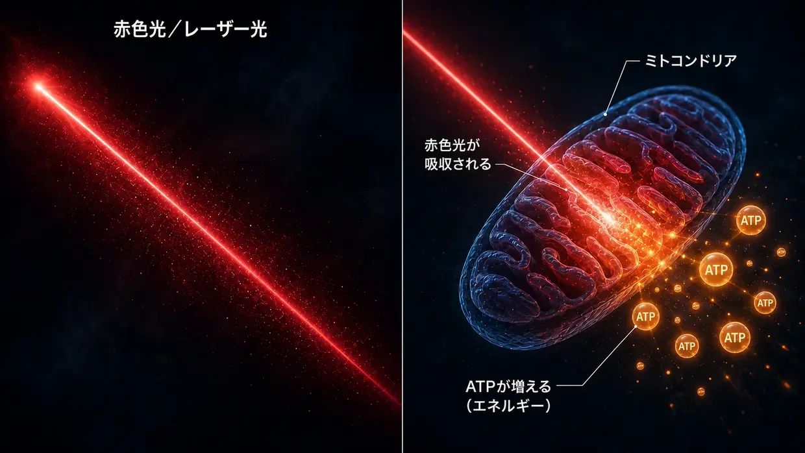
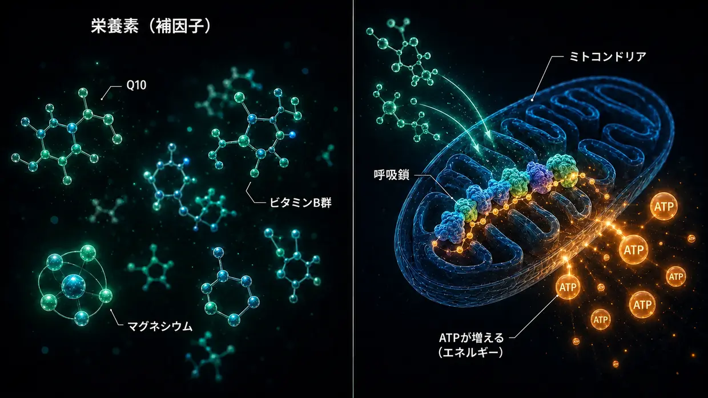

科学的資料と臨床エビデンス
このページでは、このウェブサイトで私が書いていることすべての土台を示します。私のモデルは、私の耳鳴りで、細胞レベルでは何が起きたのかについての、私自身の個人的な解釈です。しかし、個々の構成要素――不動毛（ステレオシリア）の内部でアクチンフィラメント同士をつなぐクロスリンカー、騒音によるカルパインの活性化、ATP代謝、XIRP2による修復、脳の中枢性ゲイン、蝸牛内の局所HPA軸、Q10・ビタミンB群・ナイアシンがミトコンドリアに及ぼす作用――は、でたらめではありません。これらは研究文献に記録され、医師の臨床現場で試されてきました。
はじめに：2種類のエビデンス
率直に、最初に断っておきます。このページには2種類のエビデンスを載せています――そして、どちらか一方を初めからもう一方より上に位置づけることなく、あえて並べて提示します。
第一に、基礎研究におけるクロスリンカーやカルパインなどのメカニズム研究。これらは、Nature Communications、Journal of Neuroscience、PNAS、eLifeなどの学術誌に掲載された、査読済み（独立した専門家が審査した）の研究です。個々の細胞内の仕組み（つまり、一つひとつの細胞の中で進むプロセス）がどのように働くのかを示しています――クロスリンカーが不動毛をどう安定させるか、騒音によってカルパインがどう活性化するか、XIRP2が断裂をどう応急的に安定させるか、ATPの増加が、個々人の身体的な能力の許す範囲まで、騒音損傷後の聴覚をどう回復させるかです。これらの研究は、私の騒音性耳鳴りモデルを理解するうえで欠かせません。
第二に、経験豊富な医師による臨床現場のエビデンス（つまり、経験豊富な医師が長年にわたり、実際の患者を診る中で直接見て、記録してきたこと）。その一例が、Dr. Lutz Wildenの声です。彼は1987年以来――つまり35年以上にわたり――低出力レーザー療法で内耳疾患の患者を継続的に治療し、標準的な記録として治療前後のオージオグラムを残しています。さらに、自分で行う治療に確認のための聴力検査を組み合わせている、世界中の数千人にのぼる家庭用レーザーの利用者がいます。スイスでは、Tinnitoolも1990年代から、同じ作用ロジック（LLLT→有毛細胞でのATP増加）で数千人の患者に対応してきました。さらに、プラハのHahnグループ（公表された2件の研究で540人の患者）、日本の京都大学、ブラジルの研究グループがあります――いずれも、レーザーが十分に強くなると測定可能な改善が見られました。レーザーが弱すぎ、公正な検証で何も見いだせなかった研究についても、この先で率直に位置づけます。あるいは、重金属や毒性物質による負荷に何十年も取り組んできたDr. Dietrich Klinghardtです。こうした臨床経験の大部分は、大手学術誌（Nature Communicationsなど）には掲載されていません――それには理由があり、Wilden自身がその理由を語っています。しかし、だからといって、この数十年の間に、この方法で回復した患者が現実に相当数にのぼり、聴力検査資料による裏づけがあるという事実は変わりません。
なぜ2つのエビデンス源がともに重要なのか
私は、査読を受けたものだけが、真剣に受け止めるに値する唯一の真実だというふりをするより、2つのエビデンス源を並べるほうが誠実だと思っています。私の見方では、その理由は、耳鳴り研究の資金の大部分が、むしろ補聴器の開発や、特許で保護された医薬品開発パイプラインに流れていることにあります。特許化できない栄養素の組み合わせ、特定の高照射量レーザープロトコル、あるいは解毒プロトコルには、端的に言って、研究機関の関心がありません。
私は医師でも、科学者でも、研究者でもありません。私は、耳鳴りが二度治った元当事者であり、現存する私の聴力検査資料が対象としているのは、最初の経過だけです。私は取りつかれたように読みあさり、調べ、試してきました。ここで研究や医師の言葉を引用しても、それが私の方法があなたにも有効だという証拠になるわけではありません。意味するのは、私が依拠している個々の構成要素が、研究と実践の場で真剣に受け止められているということです。急性の症状がある場合――とりわけ急性の耳鳴りや聴力低下がある場合――は、器質的な原因がないか確認してもらうため、まず耳鼻咽喉科医に相談してください。
詳しい話に入る前に、先に一つ言っておきます：私の調査全体から得た最も重要な知見は、何度も目にした一つのパターンです――有毛細胞でのエネルギー産生がはっきりと引き上げられたところでは、どこでも耳鳴りが改善しました。まったく異なる3つの道、共通項は一つ。その点は、この先で詳しく示します：すぐそこへ飛びたい方は、ここをクリックしてください。それ以外の方には、まず土台から案内します――耳がどのようにできていて、その中の何が壊れるのかです。
第1部：基礎研究――作用機序を扱った研究
不動毛（ステレオシリア）のアクチンフィラメント間をつなぐクロスリンカー
メインページでは、不動毛を、短いタンパク質の橋――クロスリンカー――で束ねられた、ゆでる前のスパゲッティの束にたとえています。このクロスリンカーは、私の創作ではありません。具体的な3つのタンパク質ファミリー――Plastin/Fimbrin（PLS1）、Espin（ESPN）、Fascin-2（FSCN2）――であり、不動毛におけるその存在と機能は、20年以上にわたって分子レベルで記録されています。
Krey JF, Krystofiak ES, Dumont RA, et al. (2016). Plastin 1 widens stereocilia by transforming actin filament packing from hexagonal to liquid. Journal of Cell Biology, 215(4), 467–482. PMID: 27811163. リンク
クロスリンカーを定量化した中核研究です。Kreyらは質量分析によって、1本の不動毛のアクチンフィラメント間に、約30,500個のPlastin-1分子、16,100個のFascin-2分子、14,800個のEspin分子が含まれることを明らかにしました。Plastin-1は、アクチン自体に次いで、不動毛全体で2番目に多いタンパク質です。機能するPlastin-1またはFascin-2を欠くマウスでは聴覚機能が低下し、二重変異マウスで最も強い影響が見られました。Plastin-1を欠く不動毛は、野生型の不動毛より短く、細い状態です。クロスリンカーが不動毛の構造的完全性を実際に支えていることを示す、直接的な実験証拠です。
Perrin BJ, Strandjord DM, Narayanan P, et al. (2013). β-Actin and Fascin-2 Cooperate to Maintain Stereocilia Length. Journal of Neuroscience, 33(19), 8114–8121. PMID: 23658152. リンク
Fascin-2の機能が失われると何が起きるのかを示す直接的な証拠です。Fascin-2変異を持つマウスでは、進行性の高周波域難聴と、不動毛の第2列、第3列に特異的な短縮が見られます。変異型Fascin-2は依然としてアクチンに結合できるものの、フィラメント同士を効果的に架橋できません――そのために、不動毛は長さを失います。これは、メインページで私が騒音によるクロスリンカー喪失について説明しているのと同じ構造上の最終結果です。ただし、ここではカルパインによる切断ではなく、遺伝子変異によって再現されています。
Sekerková G, Zheng L, Loomis PA, et al. (2004). Espins are multifunctional actin cytoskeletal regulatory proteins in the microvilli of chemosensory and mechanosensory cells. Journal of Neuroscience, 24(23), 5445–5456. PMID: 15190118. リンク
不動毛にあるアクチン・クロスリンカーとしてのEspinを構造的に特性評価した研究です。Espinは、平行に走るアクチンフィラメントを束ねるタンパク質として同定されており、カルシウムによって阻害されません。不動毛の内部は、正常に機能しているときにもカルシウムの変動にさらされるため、この点は重要です。Espinに欠陥のあるマウスは耳が聞こえず、平衡障害も示します。Espin変異は、人でも遺伝性難聴を引き起こします。
これらをすべて合わせると、何を意味するのか：3つのクロスリンカー――Plastin/Fimbrin、Espin、Fascin-2――の遺伝子変異やノックアウトだけでも、難聴と不動毛の構造異常が生じます。ならば、私がメインページで説明しているような、騒音による後天的なカルパイン切断が、これらまたは関連するクロスリンカーに起こり、同じ構造上の最終結果をもたらし得るという考えには、生物学的な妥当性があります。
騒音によるカルパインの活性化
騒音にさらされると、大量のカルシウムが有毛細胞へ流れ込みます。このカルシウム過負荷がカルパインを活性化します。カルパインはカルシウム依存性のプロテアーゼ酵素で、その後、アクチンを架橋するタンパク質を切断します。このメカニズムが現実に起こることは、異なるカルパイン阻害剤を用いた2つの独立した研究室によって実証されています。
Lai R, Fang Q, Wu F, Pan S, Haque K, Sha SH. (2023). Prevention of noise-induced hearing loss by calpain inhibitor MDL-28170 is associated with upregulation of PI3K/Akt survival signaling pathway. Frontiers in Cellular Neuroscience, 17, 1199656. リンク
カルパインのメカニズムを示す直接的な証拠です。騒音は有毛細胞内のµ-カルパインとm-カルパインを活性化し、カルパイン阻害剤MDL-28170は、難聴とシナプス喪失の両方を防ぎます。この研究はさらに、カルパインが構造タンパク質α-Fodrin――細胞皮質にあるスペクトリンとアクチンの架橋タンパク質――を切断することを示しています。これは、不動毛に特有のPlastin/Espin/Fascin-2とまったく同じ種類のクロスリンカーではありません。しかし、騒音によってカルパインが活性化し、アクチンを架橋するタンパク質を攻撃することは示されています。そこで不動毛のクロスリンカーも影響を受ける可能性があるというのは、これらの知見が重なるところから導かれる、妥当な仮説です。
Yamaguchi T, Yoneyama M, Ogita K. (2017). Calpain inhibitor alleviates permanent hearing loss induced by intense noise by preventing disruption of gap junction-mediated intercellular communication in the cochlear spiral ligament. European Journal of Pharmacology, 803, 187–194. PMID: 28366808. リンク
別の研究室で別の阻害剤（PD150606）を用いた研究が、カルパインによる損傷メカニズムを裏づけています。さらに、損傷箇所がもう1つあることを示しています。騒音下では、カルパインは蝸牛らせん靱帯のギャップ結合を介した細胞間コミュニケーションも攻撃します。そこは蝸牛の側壁です。騒音による損傷が、1か所だけに限られることはありません。
背景文献： Fettiplace R, Hackney CM. (2006). The sensory and motor roles of auditory hair cells. Nature Reviews Neuroscience, 7(1), 19–29. ――有毛細胞の構造と機能に関する古典的な総説です。
XIRP2によるアクチン修復（フェーズ1）
Wagner EL, Im JS, Sala S, et al. (2023). Repair of noise-induced damage to stereocilia F-actin cores is facilitated by XIRP2 and its novel mechanosensor domain. eLife, 12, e72681. PMID: 37294664. リンク
有毛細胞の自己修復を扱った、最も重要なメカニズム研究です。騒音によって、不動毛のアクチン骨格に測定可能な「ギャップ」が生じます。マウスでは、新たに合成されたγ-アクチンが1週間以内にこのギャップを埋めます。修復タンパク質XIRP2は損傷を機械的に感知し、修復を開始します。XIRP2がなければ、損傷は永続的に残ります。
メインページでは、XIRP2を、破断箇所を応急的に固定する「強力なダクトテープ」と表現しています（フェーズ1）。本来のフェーズ2修復――新しいアクチンを作り、新しいクロスリンカーを組み込むこと――には、この研究では、必要なものを十分に与えられた実験用マウスで約1週間かかります。では、同時にエネルギー面でハムスターの回し車にはまり込んでいる、ストレス下の成人ではどうなるのか。そこが決定的な問いです。なぜなら、その修復に必要な、まさにそのエネルギーが不足していることが多いからです。
NIH助成（R01DC021176）。
修復のレバーとなるATP増加：AC102
これは、薬理学という道筋から見た、私の騒音プロトコルの核心です。細胞のエネルギーが足りなければ、日々の負荷に追いつけないほど修復が遅く、不十分になると私は考えています。ここに挙げる研究からわかるのは、この考えが薬理学の側からも真剣に受け止められているということです。ベルリンの製薬企業は、このメカニズムそのものを狙う薬を現在開発しています。
Rommelspacher H, Bera S, Brommer B, Ward R et al. (2024). A single dose of AC102 restores hearing in a guinea pig model of noise-induced hearing loss to almost prenoise levels. PNAS, 121(15), e2314763121. PMID: 38557194. リンク
AC102の中核研究です。in vitro試験では、AC102が細胞のATP産生を大幅に高めると同時に、活性酸素種（ROS）を分解することが示されました。動物モデルでは、1回の投与によって騒音外傷後の聴力が有意に改善しました。論文タイトルでは「騒音曝露前に近いレベル」と表現されています（具体的には、騒音による平均80 dBの聴力低下に対し、13～31 dB改善――有意な改善ですが、完全な回復ではありません）。ATP産生を加速し、ROSを減らし、シナプスを守る――これらのメカニズムは、私のモデルの仕組みそのものです。ただし、ここでは薬理学的に強制的に起こされています。
Tziridis K, Rasheed J, Kwiatkowska M, et al. (2025). A Single Dose of AC102 Reverts Tinnitus by Restoring Ribbon Synapses in Noise-Exposed Mongolian Gerbils. International Journal of Molecular Sciences, 26(11), 5124. リンク
ここではさらに、AC102が耳鳴り特有の行動パターンも逆転させるかどうかが検証されました。結果は、ほぼ「イエス」でした――そして、有毛細胞と聴神経の間のリボンシナプスも有意に回復しました。細胞のエネルギーが戻ると、聴神経へのグルタミン酸の持続的な連射が止まることを示す直接的な証拠です。
Nieratschker M, Yildiz E, Gerlitz M, et al. (2024). A preoperative dose of the pyridoindole AC102 improves the recovery of residual hearing in a gerbil animal model of cochlear implantation. Cell Death & Disease, 15, 531. リンク
AC102のエビデンスを、第2の損傷経路に広げた研究です。人工内耳埋め込み術による外傷でも、この薬剤は残存聴力を守ります。つまり、このメカニズムは損傷の引き金に左右されず働くということです。騒音による機械的外傷でも、手術による機械的外傷でも、細胞の緊急事態の連鎖は同じであり、どちらの場合もATPというレバーが機能します。
AudioCure Pharma GmbH. Clinical Study NCT05776459. AC102は、突発性感音難聴（SSNHL）の患者を対象とした欧州全域での第2相試験が現在進行中です。210人の患者が組み入れられ、募集は完了していますが、結果はまだ出ていません。リンク
ストレス、HPA軸、そして神経内分泌器官としての蝸牛
ストレス性耳鳴りは、騒音性耳鳴りより科学的に捉えるのが難しいものです。ここで私のモデルにとって決定的なのは、一般的な慢性ストレスがHPA軸を介して独自の耳鳴り音を生み出すわけではない、という点です。ただし、内耳をより傷つきやすくすることはあります。交感神経が活性化すると血流が低下する可能性があり、血管条の血管が収縮すれば、内耳は騒音やその他の影響による損傷を受けやすくなる可能性があります。以下の蝸牛の局所HPAシグナル系に関する研究は、内耳の生理学的過程を記述したものです。私はそこから、耳鳴りを生み出す独立したHPA経路を導き出してはいません。
Graham CE, Vetter DE. (2011). The mouse cochlea expresses a local hypothalamic-pituitary-adrenal equivalent signaling system and requires corticotropin-releasing factor receptor 1 to establish normal hair cell innervation and cochlear sensitivity. Journal of Neuroscience, 31(4), 1267–1278. PMID: 21273411. リンク
中核となる研究です。マウスの蝸牛では、HPA軸のシグナル系全体が局所的に発現しています。コルチコトロピン放出因子（CRF）、CRF1受容体、ACTH、ミネラルコルチコイド受容体、グルココルチコイド受容体です。CRF1受容体をノックアウトしたマウスでは、有毛細胞の神経支配の乱れと蝸牛感度の低下が見られます。つまり、この研究が記述しているのは蝸牛の局所的な調節系であり、独立したHPA耳鳴り経路の証拠ではありません。
Graham CE, Basappa J, Vetter DE. (2010). A corticotropin-releasing factor system expressed in the cochlea modulates hearing sensitivity and protects against noise-induced hearing loss. Neurobiology of Disease, 38(2), 246–258. PMID: 20109547. リンク
Graham/Vetter 2011に先行する研究です。蝸牛内の局所CRF系が聴覚感度を調節し、騒音性難聴から保護し得ることを示しています。
Furuta H, Mori N, Sato C, et al. (1994). Mineralocorticoid type I receptor in the rat cochlea: mRNA identification by PCR and in situ hybridization. Hearing Research, 78(2), 175–180. PMID: 7982810. リンク
歴史上最初の報告です。ミネラルコルチコイド受容体は、蝸牛の血管条に発現しています。そこはまさに、内リンパのカリウム貯蔵を維持する、内耳の「バッテリー」です。コルチゾールはそこで、ミネラルコルチコイド受容体を介してカリウム分泌を調節し得ます。
Mazurek B, Haupt H, Olze H, Szczepek AJ. (2012). Stress and tinnitus – from bedside to bench and back. Frontiers in Systems Neuroscience, 6, 47. リンク
ベルリンのシャリテによる体系的な統合です。MazurekとSzczepekは、Graham/VetterとFurutaの原著所見を、ストレスが耳鳴りを引き起こし得る仕組みについての3つの検証可能な仮説へまとめています。蝸牛の局所HPA系を介する経路、血管条のミネラルコルチコイド受容体をコルチゾールが調節する経路（その結果、カリウム分泌に影響する）、そして聴覚路におけるグルタミン酸媒介性可塑性です。これは著者たちの仮説であり、私は音の発生に関する自分のモデルとして採用してはいません。
Hébert S, Lupien SJ. (2007). The sound of stress: Blunted cortisol reactivity to psychosocial stress in tinnitus sufferers. Neuroscience Letters, 411(2), 138–142. PMID: 17084027. リンク
耳鳴り患者は、急性の心理社会的ストレスに対し、遅延し、平坦化したコルチゾール反応を示します。この研究が記述しているのは、対象となった患者のストレス反応が変化していたということであり、HPA軸の疲弊が耳鳴りを引き起こすことを示したものではありません。
Manohar S, Chen GD, Li L, Liu X, Salvi R. (2023). Chronic stress induced loudness hyperacusis, sound avoidance and auditory cortex hyperactivity. Hearing Research, 431, 108726. PMID: 36905854. リンク
この動物モデルでは、慢性的なコルチゾールストレス下のラットに、聴覚過敏様行動と、聴覚皮質における耳鳴り様パターンが生じました――急性の騒音曝露は一切ありませんでした。これは、私のモデルにおける独立したストレス性耳鳴り経路の証拠ではありません。
Schaette R, McAlpine D. (2011). Tinnitus with a Normal Audiogram: Physiological Evidence for Hidden Hearing Loss and Computational Model. Journal of Neuroscience, 31(38), 13452–13457. リンク
SchaetteとMcAlpineは、中枢性ゲイン・モデルを説明しています。聴覚入力が減ると、中枢聴覚系は感度を引き上げます。私のモデルでは、中枢性ゲインは、すでに存在する活動中の誤信号を増幅するだけです。入力喪失だけから耳鳴り音が生まれることはありません。
Auerbach BD, Rodrigues PV, Salvi RJ. (2014). Central Gain Control in Tinnitus and Hyperacusis. Frontiers in Neurology, 5, 206.
Eggermont JJ, Roberts LE. (2004). The neuroscience of tinnitus. Trends in Neurosciences, 27(11), 676–682.
Auerbach、Rodrigues、Salviは、耳鳴りと聴覚過敏との関連で中枢性ゲインの概念を論じています。これはこの総説の立場であって、音の発生に関する私のモデルではありません。耳鳴りと聴覚過敏は同時に起こり得ますが、私はそれらを中枢性増幅の副作用とは位置づけていません。Eggermont/Roberts（古典的論文）：耳鳴りは、聴覚皮質における自発神経活動の変化と、トノトピー構造の変化に関連しています。
トラウマ、記憶として残ったストレス、隣接する神経路の共刺激
これとは別の中枢性経路が、次の問いに関わります。記憶として残ったトラウマは、何年もたってから、どのように身体症状を引き起こし得るのか。そして脳内の局所的で自律的に活動するストレスの焦点は、隣接する神経中枢を実際にどのように共活性化し得るのか。
これこそ、Michael Prgometが「静電的な電位場」としてわかりやすく説明しているメカニズムです（セクション14を参照）。私はストレス性耳鳴りのページで、このモデルを平易な言葉で組み立てています。このセクションが示すのは、このモデルの土台となる個々の神経生物学的要素が、科学的に十分確立されているということです。この統合の独自性は、これらの要素を一貫した説明モデルへまとめる結びつきにあります。個々のメカニズム自体は査読を受け、複数回再現されています。
5.1.1 トラウマは、測定可能な神経生物学的痕跡を残す
強い、または慢性的なストレス体験は、特定の脳領域の構造と機能を変えることが実証されています。トラウマは「心理的なもの」にとどまらず、神経系の身体的な回路として組み込まれます。
McEwen BS, Nasca C, Gray JD. (2016). Stress Effects on Neuronal Structure: Hippocampus, Amygdala, and Prefrontal Cortex. Neuropsychopharmacology, 41(1), 3–23. PMID: 26076834. リンク
慢性ストレスが、海馬、扁桃体、前頭前皮質に測定可能な構造的・機能的変化を引き起こすことを説明しています。まさにこれらの領域は、記憶、不安、評価、ストレス調節の中核を担います。つまり、持続的に活動するストレスパターンに関わる、まさにその構造です。
Sherin JE, Nemeroff CB. (2011). Post-traumatic stress disorder: the neurobiological impact of psychological trauma. Dialogues in Clinical Neuroscience, 13(3), 263–278. PMID: 22034143. リンク
トラウマが長期に及ぼす神経生物学的影響をまとめた総説です。扁桃体の過剰反応、前頭前皮質による制御の低下、海馬の変化、ストレスホルモン系の持続的な変化を扱っています。つまり、トラウマは「状況が終われば、それで終わる」ものではありません。神経系の回路に組み込まれています。
Yehuda R, LeDoux J. (2007). Response Variation following Trauma: A Translational Neuroscience Approach to Understanding PTSD. Neuron, 56(1), 19–32. PMID: 17920012. リンク
トラウマがHPA軸、ノルアドレナリン系、自律神経反応性、海馬機能を長期にわたって変え得ることを示しています。これは、背景で動き続け得る、記憶として残ったストレスパターンのメカニズム上の土台です。
5.1.2 アロスタティック負荷――慢性ストレスになって初めて問題になる理由
急性の状況的ストレスは健全な反応であり、十分に対処できます。私がストレス性耳鳴りのページで説明している現象は、普通の口論や急性の負荷で起こるのではありません。システムが回復できなくなり、負荷が時間とともに積み重なって初めて生じます。
McEwen BS. (1998). Stress, Adaptation, and Disease: Allostasis and Allostatic Load. Annals of the New York Academy of Sciences, 840(1), 33–44. PMID: 9629234. リンク
アロスタティック負荷という概念を打ち立てた研究です。急性ストレスは役に立つ。慢性的、累積的な負荷はシステムを傷つける。この点こそが、「ストレスは一般に耳鳴りを引き起こす」という誤解を招く主張と、私のモデルを明確に分けます。問題は日常的なストレスではありません。慢性的にすでに負荷を抱えたシステムです。
McEwen BS, Stellar E. (1993). Stress and the individual: mechanisms leading to disease. Archives of Internal Medicine, 153(18), 2093–2101. PMID: 8379800.
慢性ストレスが病気に至るメカニズムを説明しています。単発の出来事ではなく、累積する負荷によるものです。なぜ日常的なストレスを抱えるすべての人にこれらの現象が起こるわけではなく、システムがすでに慢性的に不安定になっている人だけに起こるのかを、明快に説明しています。
5.1.3 中枢性感作――すでに負荷を抱えた神経系の増幅器
慢性的な負荷がかかると、中枢神経系は刺激に敏感になります。抑制は低下し、興奮性は高まり、刺激閾値は下がります。以前なら閾値以下だった刺激だけで、突然、症状を引き起こせるようになります。これは、私がストレス性耳鳴りのページで「すでに負荷を抱え、刺激を通しやすいシステム」と説明しているものを、科学的な言葉で表したものです。
Woolf CJ. (2011). Central sensitization: Implications for the diagnosis and treatment of pain. Pain, 152(3 Suppl), S2–S15. PMID: 20961685. リンク
中枢性感作を、正常または閾値以下の入力刺激に対する中枢ニューロンの反応性亢進と定義しています。現代の疼痛研究における、確立された礎です。私のモデルは、この原理をストレス性耳鳴りに当てはめています。
Latremoliere A, Woolf CJ. (2009). Central sensitization: a generator of pain hypersensitivity by central neural plasticity. The Journal of Pain, 10(9), 895–926. PMID: 19712899. リンク
中枢性感作の細胞・分子メカニズムを詳細に説明しています。すでに負荷を抱えたシステムが、小さなストレス場でも症状を起こし得るようになるための前提条件を、そもそもどう作り出すのかを示しています。
Yunus MB. (2008). Central sensitivity syndromes: a new paradigm and group nosology for fibromyalgia and overlapping conditions. Seminars in Arthritis and Rheumatism, 37(6), 339–352. PMID: 18191990. リンク
中枢性感作という概念を、線維筋痛症、慢性疲労、過敏性腸症候群、慢性耳鳴り、そして関連する症候群に適用しています。まさに、私のストレス性耳鳴りモデルに科学的な足場を与える橋です。
5.1.4 エファプティック結合――隣接する神経細胞への直接的な電気的共刺激
これは、ヴァン・デ・グラフ球の比喩の背後にある、神経生理学的な核心です。ある神経領域が強く同期して発火すると、古典的なシナプスを介さずに、隣接する神経細胞へ実際に影響を及ぼし得る局所電場が生まれます。活動が十分に強ければ、この電場は隣接細胞を刺激して発火閾値を超えさせ、その発火パターンを同期させることができます。これこそ、「神経Aが発火すると、神経Bも巻き込まれる」というメカニズムです。
Anastassiou CA, Perin R, Markram H, Koch C. (2011). Ephaptic coupling of cortical neurons. Nature Neuroscience, 14(2), 217–223. PMID: 21240273. リンク
皮質におけるエファプティック結合を直接実験で示した研究です。細胞外電場が、隣接するニューロンの膜電位を変化させ、活動電位のタイミングを同期させ得ることを示しました。活動の強い神経細胞群が、隣接細胞を実際に電気的に共活性化し得ることを示す、中核的な証拠です。
Buzsáki G, Anastassiou CA, Koch C. (2012). The origin of extracellular fields and currents — EEG, ECoG, LFP and spikes. Nature Reviews Neuroscience, 13(6), 407–420. PMID: 22595786. リンク
脳内で電場が生じる仕組みについての基礎的な総説です。同期して活動するニューロン群が、電位勾配を介してほかのニューロンの機能に影響を与え得る仕組みを説明しています。この総説が明確にしているのは、これが高電圧球のような「大きな稲妻」ではないということです。小さく、局所に限定された電場作用です。それでも現実に存在し、生物学的に作用します。
Fröhlich F, McCormick DA. (2010). Endogenous electric fields may guide neocortical network activity. Neuron, 67(1), 129–143. PMID: 20624597. リンク
内因性電場は、神経ネットワーク活動にただ伴うだけではなく、因果的にその活動を左右することを示しています。脳内の電場作用は単なる付随現象にすぎない、という見方に強烈なとどめを刺す証拠です。
5.1.5 キンドリング――反復刺激がパターンを刻み込む
ある神経領域が閾値以下の刺激を繰り返し受けると、時間とともに、ますます活性化しやすくなり、隣接領域も次第に動員するようになります。てんかん研究で確立され、その後、慢性疼痛、トラウマ、慢性的な刺激状態にも適用されています。
Goddard GV, McIntyre DC, Leech CK. (1969). A permanent change in brain function resulting from daily electrical stimulation. Experimental Neurology, 25(3), 295–330. PMID: 4981856.
キンドリング現象を扱った古典的な原著論文です。閾値以下の刺激を繰り返すと、脳機能に永続的な変化が生じます。つまり、その領域は時間とともに、ますます活性化しやすくなります。
Post RM. (2007). Kindling and sensitization as models for affective episode recurrence, cyclicity, and tolerance phenomena. Neuroscience & Biobehavioral Reviews, 31(6), 858–873. PMID: 17555817. リンク
キンドリングの概念を、気分障害、PTSD、慢性ストレス状態へ展開した研究です。慢性的に再活性化されるストレスパターンが、なぜ時間とともに弱まるのではなく、より強く、より広範囲に広がり得るのかを科学的に説明しています。私がストレス性耳鳴りのページで説明している、まさにその現象です。
5.1.6 グリア活性化と神経炎症――生化学的な増幅器
慢性的な刺激は、ミクログリアとアストロサイトを活性化します。これらはシグナル物質（TNF-α、IL-1β、IL-6）を放出し、周囲のニューロンの興奮性を測定可能なほど高めます。それによって、その領域全体が、より活性化しやすい状態へ移ります。これが、「すでに負荷を抱えたシステム」と「ストレス場が突破して表に出られる状態」をつなぐ、生化学的な増幅器です。
Ji RR, Nackley A, Huh Y, Terrando N, Maixner W. (2018). Neuroinflammation and Central Sensitization in Chronic and Widespread Pain. Anesthesiology, 129(2), 343–366. PMID: 29462012. リンク
グリアの活性化が中枢性感作をどう推し進めるかを示す直接的な証拠です。ミクログリアとアストロサイトは、受動的な支持細胞にすぎないわけではありません。神経の興奮性を能動的に調節し、慢性的な負荷のもとで、神経組織を持続的に刺激を通しやすい状態へ変え得ます。
Michopoulos V, Powers A, Gillespie CF, Ressler KJ, Jovanovic T. (2017). Inflammation in Fear- and Anxiety-Based Disorders: PTSD, GAD, and Beyond. Neuropsychopharmacology, 42(1), 254–270. PMID: 27510423. リンク
PTSDと慢性不安は、神経系における測定可能な炎症性変化と関連しています。これで輪が閉じます。トラウマ → ストレス → 神経炎症 → 刺激を通しやすい組織 → 記憶として残ったストレスパターンが、より活性化しやすくなる。
5.1.7 視床皮質律動異常――耳鳴りとの直接的なつながり
慢性耳鳴りでは、MEG・EEG研究によって、視床と聴覚皮質の間に病的な振動パターンが示されています。局所的に変化した活動パターンは、持続的なシータ・ガンマ結合を生み、それが持続的な音知覚に寄与する可能性があります。これは、過活動状態のストレス場と、持続的な耳鳴り知覚をつなぐ、直接的な神経生理学的な橋です。
Llinás RR, Ribary U, Jeanmonod D, Kronberg E, Mitra PP. (1999). Thalamocortical dysrhythmia: A neurological and neuropsychiatric syndrome characterized by magnetoencephalography. PNAS, 96(26), 15222–15227. PMID: 10611366. リンク
高感度のMEG技術で測定される、慢性神経症状のメカニズムとして、視床皮質律動異常という概念を打ち立てた研究です。まさにそのMEG装置を使えば、脳内のごく小さく局所に限定された電場も可視化できます。
De Ridder D, Vanneste S, Langguth B, Llinás R. (2015). Thalamocortical Dysrhythmia: A Theoretical Update in Tinnitus. Frontiers in Neurology, 6, 124. PMID: 26106362. リンク
MEGデータを用いて、この概念を慢性耳鳴りへ直接適用した研究です。慢性耳鳴り患者の聴覚皮質で、病的なシータ・ガンマ結合を測定できることを示しています。
Vanneste S, De Ridder D. (2012). The auditory and non-auditory brain areas involved in tinnitus. An emergent property of multiple parallel overlapping subnetworks. Frontiers in Systems Neuroscience, 6, 31. PMID: 22586375. リンク
慢性耳鳴りが、聴覚系と非聴覚系にまたがる複数の脳ネットワークの連携の変化と関連していることを示しています。その際、ストレス／ディストレス・ネットワークは、聴覚ネットワークと機能的に結びついています。このつながりを通じて、過活動状態のストレスパターンが聴覚系へ波及し得ます。
5.1.8 記憶の再固定化――古いストレスパターンを解消できる理由
古い情動記憶は、永久に固定配線されているわけではありません。再活性化されると、短時間、不安定な状態になり、変化または解放された形で改めて保存され得ます。Michael Prgometの手法、EMDR、その他の再活性化を用いる治療アプローチが、そもそも作用し得る理由。その科学的な土台です。
Nader K, Schafe GE, Le Doux JE. (2000). Fear memories require protein synthesis in the amygdala for reconsolidation after retrieval. Nature, 406(6797), 722–726. PMID: 10963596. リンク
記憶の再固定化を扱った古典的な原著研究です。動物モデルで、すでに保存された恐怖記憶が再び呼び起こされると、もう一度不安定な状態に入り得ること、そして改めて安定化しなければならないことを示しています。その過程で、意図的に変えられることも示しています。
Lane RD, Ryan L, Nadel L, Greenberg L. (2015). Memory reconsolidation, emotional arousal, and the process of change in psychotherapy: New insights from brain science. Behavioral and Brain Sciences, 38, e1. PMID: 24827452. リンク
この概念を治療への応用に広げた研究です。狙いを定めた再活性化と、その後の新たな処理によって、古い情動プログラムを変え得ることを示しています。このメカニズムこそがPrgometの取り組みの土台です。ただし、彼の特有の手法は、従来型のRCTによって実証されてはいません。
5.1.9 統合：私のモデルを1つの図にすると
個々の要素を組み合わせると、次の全体像が浮かび上がります。私がストレス性耳鳴りのページで平易な言葉を使って説明しているのは、まさにこのことです。
- トラウマまたは慢性ストレスが脳構造とHPA軸を変える → システムの基本構造が変化する（5.1.1）
- アロスタティック負荷が積み重なり、システムは回復できなくなる → システムがあらかじめ負荷を抱えた状態になる（5.1.2）
- 中枢性感作によって神経系全体が刺激を通しやすくなる → 閾値が下がる（5.1.3）
- グリアと神経炎症が、刺激を通しやすい状態を生化学的に増幅する（5.1.6）
- 引き金が、記憶として残ったストレスパターンを再活性化する → 局所領域の発火が強まる
- キンドリングによって、その領域は時間とともに、ますます反応しやすくなっている（5.1.5）
- エファプティック結合によって、隣接する経路を電気的に共活性化できる（5.1.4）
- この共活性化が聴覚処理ネットワークに及ぶと、実際に音を知覚する状態が生じ得る
- 視床皮質律動異常が、このパターンを安定化する（5.1.7）
- 記憶の再固定化が示すこと：そのパターンの発生源を意図的に再活性化し、新たに処理すれば、このようなパターンは解消し得る（5.1.8）
この10の要素は、どれも査読を受け、複数回再現されています。私のモデルの独自性は、1つのメカニズムにあるのではありません。それらの結びつきにあります。既存の耳鼻咽喉科診療では、このつながりを一体として考えることはまれです。そのため、ストレス性耳鳴りは「心理的なものにすぎない」と片づけられるか、根底にある仕組みを説明しないまま、CBTのような単独の対策で扱われがちです。
このセクションが主張していないこと
曖昧さを残さないために、ここで主張していないことを明記します。
- すべての慢性耳鳴りがストレス性であるとは主張していません。騒音性耳鳴り、耳毒性による耳鳴り、その他のタイプには、それぞれ別の主因があります（該当する各セクションを参照）。
- Michael Prgometの具体的な手法が、従来型の査読研究によって実証されているとは主張していません（セクション14を参照）。実証されているのは、彼の説明モデルの土台となる、個々の神経生物学的メカニズムです。
- 慢性ストレスに伴うすべての心身症状が、まさにこのメカニズムだけで生じるとは主張していません。ほかにも数多くの経路があります。
- 治癒を約束するものではありません。経過には、個人によって大きな差があり得ます。
ここで述べているのは、私のストレス性耳鳴りモデルを支える個々の要素が、科学的に確立されているということです。
薬剤・毒性物質による耳鳴り
一部の薬剤や有害物質は、有毛細胞を直接攻撃します。仕組みは騒音の場合とは異なります――しかし、細胞レベルで行き着く先はたいてい同じです：ミトコンドリアのカルシウム過負荷、ATP不足、アポトーシス。独立した第2の経路における、モデルの収束です。
Salvi R, Ding D, Manohar S, et al. (2022). Salicylate Ototoxicity, Tinnitus, and Hyperacusis. Springer Nature, Handbook of Neurotoxicity. リンク
アスピリン誘発性耳毒性を扱った包括的なレビューです。サリチル酸塩は、外有毛細胞の電気運動を担うモーターであるプレスチンを阻害し、中枢で耳鳴り反応を引き起こします。急性過量投与の影響は可逆的ですが、慢性的な高用量投与は永続的な構造変化を引き起こすことがあります。
Sheppard A, Hayes SH, Chen GD, et al. (2014). Review of salicylate-induced hearing loss, neurotoxicity, tinnitus and neuropathophysiology. Acta Otorhinolaryngologica Italica, 34(2), 79–93. リンク
サリチル酸塩の作用を詳細に検討しています。
Esterberg R, Linbo T, Pickett SB, et al. (2016). Mitochondrial calcium uptake underlies ROS generation during aminoglycoside-induced hair cell death. Journal of Clinical Investigation. リンク
アミノグリコシド系抗菌薬（ゲンタマイシン、ストレプトマイシン）は有毛細胞に取り込まれ、ミトコンドリアへのカルシウム取り込みを誘導し、それが大量のROS産生につながります。仕組みとしては、私がメインページで説明しているカルシウム・ミトコンドリア・カスケードそのものです――ただし、引き金は機械的なものではなく化学的なものです。
Jiang M, Karasawa T, Steyger PS. (2017). Aminoglycoside-Induced Cochleotoxicity: A Review. Frontiers in Cellular Neuroscience, 11, 308. リンク
アミノグリコシド毒性の概説：機械電気変換チャネルを通じた侵入、ミトコンドリア損傷、アポトーシス。
コエンザイムQ10とミトコンドリア保護
Q10は私のプロトコルにしっかり組み込まれていました。Q10はミトコンドリア呼吸鎖の電子伝達体であり、同時に強力な抗酸化物質でもあります。
Fetoni AR, Piacentini R, Fiorita A, Paludetti G, Troiani D. (2009). Water-soluble Coenzyme Q10 formulation (Q-ter) promotes outer hair cell survival in a guinea pig model of noise induced hearing loss (NIHL). Brain Research, 1257, 108–116. PMID: 19133240. リンク
動物モデル：Q10は騒音外傷後の外有毛細胞のアポトーシスを有意に減少させました。
Staffa P et al. (2014). Activity of coenzyme Q10 (Q-Ter multicomposite) on recovery time in noise-induced hearing loss. Noise and Health. リンク
小規模なヒト研究（被験者30人）：水溶性Q10は騒音曝露後の回復時間を短縮し、騒音によって生じた耳鳴りを軽減しました。
Astolfi L et al. (2016). Coenzyme Q10 plus Multivitamin Treatment Prevents Cisplatin Ototoxicity in Rats. PLoS ONE, 11(9), e0162106. PMID: 27632426.
Q10とマルチビタミンの併用は、化学療法薬シスプラチンの耳毒性による損傷からラットを守りました――第3の経路でも、同じ保護メカニズムです。
マグネシウムとビタミンB12
Cevette MJ, Barrs DM, Patel A, et al. (2011). Phase 2 study examining magnesium-dependent tinnitus. International Tinnitus Journal, 16(2), 168–173. PMID: 22249877. リンク
メイヨー・クリニックの研究：3か月にわたり毎日532 mgのマグネシウムを投与したところ、耳鳴り負担スコアが有意に低下しました。
Singh C, Kawatra R, Gupta J, et al. (2016). Therapeutic role of Vitamin B12 in patients of chronic tinnitus: A pilot study. Noise & Health, 18(81), 93–97. リンク
二重盲検パイロット研究：耳鳴り患者の42.5％にビタミンB12欠乏がありました。欠乏があり、B12注射による治療を受けた人では、有意な改善が見られました。
Shemesh Z, Attias J, Ornan M, et al. (1993). Vitamin B12 deficiency in patients with chronic-tinnitus and noise-induced hearing loss. American Journal of Otolaryngology, 14(2), 94–99. PMID: 8484483. リンク
歴史的な最初の報告：騒音性難聴を伴う耳鳴りのある人の47％にB12欠乏がありました――これに対し、騒音による聴覚障害があって耳鳴りのない人では27％、正常聴力者ではわずか19％でした。
バイオアベイラビリティと栄養素の吸収
私のバイオアベイラビリティのページでは、慢性的なストレスを抱える人では、栄養素の形態や摂り方のほうが、成分表より重要なことが多い理由を説明しています。その背後にある生理学は十分に確立されています――1960年代から世界中で用いられ、何百万人もの命を救ってきた経口補水療法の基礎です。
Loo DDF, Zeuthen T, Chandy G, Wright EM. (1996). Cotransport of water by the Na+/glucose cotransporter. PNAS. リンク
SGLT1共輸送体に関する基礎を築いた研究：1回の輸送サイクルごとに、ナトリウム、グルコース、約260個の水分子が同時に体内へ送り込まれます。
Buccigrossi V et al. (2020). Potency of Oral Rehydration Solution in Inducing Fluid Absorption is Related to Glucose Concentration. Scientific Reports, 10, 7803. リンク
どんなナトリウム・グルコース混合物でも同じように作用するわけではありません――最適な比率は、およそナトリウム60 mmol/L、グルコース111 mmol/Lです。配合は正確に調整しなければなりません。
マウス対ヒト――私が動物モデルを慎重に扱う理由
Valero MD, Burton JA, Hauser SN, et al. (2017). Noise-induced cochlear synaptopathy in rhesus monkeys (Macaca mulatta). Hearing Research, 353, 213–223. PMID: 28712672. リンク
霊長類では、騒音曝露後に12～27％のシナプス喪失が測定されました――マウスでは40～55％でした。霊長類（したがって、おそらくヒトも）は、1回の騒音曝露による影響がマウスほど深刻ではありません。
ただし、逆の結論には注意が必要です：初期の感受性が低いからといって、修復能力が高いとは限りません。それどころか、ヒトは日常生活の中で、自然修復力が低下した状態（ストレス、睡眠不足、供給不足による）に加え、より大きく、長年蓄積してきた損傷歴を抱えています。これは私の論旨の中心にある命題です。
全体を貫く一本の筋：ATP増加＝耳鳴り改善
詳細な各セクションに入る前に、すべての根底にある中心的な所見を、まずお見せしたいと思います。この出典ページから一つだけ持ち帰るとしたら、これです：
この数十年、世界のどこであっても――どんな方法であっても――内耳の有毛細胞でATP産生が高められるたびに、耳鳴りは改善しました。
これは理論でも願望でもありません。少なくとも10か国の科学者や医師が、異なる方法を使い、異なる患者コホートを対象に研究し、応用してきた、まったく独立した3つの治療経路に一貫して見られる所見です。以下がその3つの経路です――どれも同じ生化学的終点へつながっています。
経路1：レーザー光によるATP増加（フォトバイオモジュレーション／LLLT）

600～900 nm帯のレーザー光は、ミトコンドリア呼吸鎖のシトクロムcオキシダーゼに吸収されます。生化学的な効果は、ATPの増加、酸化ストレスの低下、そして細胞がエネルギー面の緊急運転から抜け出せることです。
この経路の主な代表例：
- Dr. Lutz Wilden、Bad Füssing/Ibiza、1987年以来――高照射量の830 nmレーザーで数千人の耳鳴り患者を治療し、オージオグラムを記録し、臨床結果を公表（詳細と率直な位置づけはセクション12）
- Hahnグループ、プラハ・カレル大学、2001/2012年――2件の研究のうち大規模なほうでは患者420人、レーザー＋イチョウ（EGb 761）の併用により、患者の56.7％で客観的な耳鳴り改善が見られ、その幅は平均30 dB（レーザー単独療法ではなく、併用療法を支持）
- Tauber et al.、LMU München、2003年――経外耳道的な蝸牛照射のためのTCLシステム
- Cuda & De Caria、イタリア、2008年――カウンセリングとLLLTの併用
- Teggi et al.、San Raffaele Mailand、2008/2009年――メニエール病に対するLLLT
- Mollasadeghi et al.、イラン、2013年――騒音性耳鳴りを対象とした二重盲検RCT、有意
- Shiomi et al.、京都大学、1997年――40 mW、830 nm、経外耳道、先駆者
- Panhóca et al.、ブラジル、2023年――比較RCT、LLLTが最も有効な方法
→ 詳細はすべて、セクション11（LLLTの用量ロジック）とセクション12（Dr. Wilden）を参照。
経路2：医薬品によるATP増加（AC102）
ベルリンで開発された薬理学的有効成分で、ミトコンドリアのATP産生に直接介入すると同時に、活性酸素種（細胞を内側から攻撃する攻撃性の高い老廃分子――いわば細胞のさび）を分解します。製薬業界はここで、WildenとHahnが何十年も続けてきたことを取り上げています――ただし、特許を取れる薬という形で。
この経路の主な代表例：
- Rommelspacher et al.、AudioCure Pharma Berlin、学術誌PNAS 2024年――1回の投与で、動物モデルの騒音外傷後の聴力を明確に改善（統計学的に有意だが、完全な回復ではない）、ATP増加、活性酸素種（細胞のさび）減少、シナプス保護
- Tziridis et al.、学術誌Int. J. Mol. Sci. 2025年――リボンシナプス（有毛細胞が聴神経へ信号を伝える微細な接点）が回復し、耳鳴り特異的な行動パターンが減少
- Nieratschker et al.、学術誌Cell Death & Disease 2024年――人工内耳植込みによる外傷にも有効
- 第2相臨床試験NCT05776459――欧州全域のSSNHL患者210人（突発性難聴、つまり内耳で突然聴力を失った人）を対象
経路3：栄養素によるATP増加

呼吸鎖を直接支え、あるいは作動させるミトコンドリア補因子。十分なQ10がなければ、複合体I／IIと複合体IIIの間の電子伝達は進みません。十分なB12がなければ、聴神経を含む神経線維で脱髄が起こります。十分なマグネシウムがなければ、ATP合成そのものを含む約600の酵素反応が機能しません。ビタミンC、E、セレン、亜鉛、αリポ酸などの抗酸化物質は、エネルギー面の緊急運転の結果として生じる活性酸素種から細胞を守ります。
3.1 古典的なミトコンドリア補因子（Q10、マグネシウム、B12）
- Fetoni et al.、Brain Research 2009年――Q10は騒音外傷後の外有毛細胞のアポトーシスを有意に減少させる
- Staffa et al.、Noise & Health 2014年――Q10は騒音曝露後の回復時間を短縮し、耳鳴りを軽減する
- Astolfi et al.、PLOS One 2016年――Q10とマルチビタミンの併用はシスプラチンによる耳毒性から保護する
- Cevette et al.、Mayo Clinic 2011年――532 mgのマグネシウムを3か月間投与すると、耳鳴りによる負担が有意に軽減する（重要：プラセボ対照のない非盲検研究のため、先駆的ではあるものの、最終的な証明ではありません。耳鳴りは自然経過による変動とプラセボ効果が大きいからです）
- Singh et al.、Noise & Health 2016年――耳鳴り患者の42.5％にB12欠乏があり、欠乏患者では補充により有意に改善する
- Shemesh et al.、1993年――B12と耳鳴りの関連を初めて記載した歴史的報告
3.2 ナイアシン／ビタミンB3／NAD+――ATPを増やすうえで最も直接的な手段
ここで取り上げる用量は公表済み研究に由来するもので、自己判断での摂取を勧めるものではありません。栄養素を補充する前に――特に高用量の場合は――医師に相談してください。
ナイアシン（ビタミンB3。形態としてはニコチン酸、ニコチンアミド、ニコチンアミドリボシド）は、NAD+とNADHの直接の代謝前駆体です――NAD+とNADHは、ミトコンドリア呼吸鎖の補酵素です。NAD+が十分になければ、クレブス回路は呼吸鎖へ電子を渡せず、その電子がなければATPは産生されません。したがって、ナイアシンは単なる「耳鳴りのための数ある栄養素の一つ」ではなく、有毛細胞でATPを産生するための直接の前駆体です。もし私のモデル――慢性耳鳴りは有毛細胞のエネルギー危機である――が正しいなら、ナイアシンの補充は役立つはずです。ただし、科学的に正直に言えば、ナイアシンの耳鳴りへの効果を直接調べた臨床研究は古く（大半は1940年代から1980年代）、大部分が非対照研究です。自然療法の現場からは何十年にもわたり肯定的な報告がありますが、ナイアシンがヒトの耳鳴りを改善することを示す、現代的な二重盲検RCTの証拠はありません。作用機序の面では、このアプローチは非常によく裏づけられています。とはいえ、ヒトの耳鳴りに対する臨床的な効果は、まだ最終的に証明されてはいません（ここでの信頼の拠り所は、実践の経路です）。
ナイアシンフラッシュ――そして、それが生物学的に重要な理由
初めてニコチン酸を摂ると（特に空腹時、または100 mg以上の高用量で）、15～30分後に、良くも悪くも有名なナイアシンフラッシュが起こります：皮膚が熱くなり、ピリピリし、顔から胸にかけて赤くなり、ときには太ももにまで広がります。見た目は日焼けのようで、熱がこもったように感じます。30～60分続きますが、無害で、自然に収まります。初めてのときは、こう思います：「死ぬ。」2回目：「ああ、これがフラッシュか。」3回目：「実は、そんなにひどくない。」
ここで起きているのは、こういうことです。ニコチン酸は体内でプロスタグランジンD2とE2を放出させます――血管を拡張するメッセンジャー物質です。つまりフラッシュは、ニコチン酸が生物学的に活性を持ち、血流を後押ししていることが目に見えるサインです。だからこそ、本来のニコチン酸（フラッシュあり）は、私のモデルにとってそれほど価値があります――同じようにNAD+へ変換されても血管を拡張しない、フラッシュのない形（ニコチンアミド）とは対照的です。この効果がどこまで及ぶのか――皮膚だけなのか、それとも組織の深部までなのか――を、私は次のセクションで詳しく調べました。
実践的なポイント：
- 時間がたつにつれて身体が慣れ、フラッシュは弱くなる
- 低用量を継続して摂るなら、緩衝化されていないニコチン酸を食後に摂るのが正攻法です
血流はどこまで及ぶのか？――皮膚だけか、それとも深部へ、全身を通って内耳にまで届くのか？
私は、ニコチン酸が内耳まで到達し、そこで血流を増加させることを示すヒト研究を見つけられませんでした。それでも、まさにそれを示唆する手がかりは数多くあります。
ニコチン酸が血流を促進しうることは、十分に裏づけられています――十分な用量なら、顔が焼けるように熱くなるのですぐに分かります。ですから、本当に興味深い問いは、そもそも作用するかどうかではなく、どこまで届くのかです。皮膚表面だけの現象にとどまるのか――それとも組織の深部へ、さらに全身を通って、内耳のような領域にまで及ぶのか？
まずは生物学――なぜ、そもそもその経路が開かれているのか。研究――そして、私が本当に度肝を抜かれた、ある医師の非常に興味深い臨床報告――を紹介する前に、まずその仕組みを見る価値があります。なぜなら、それによって、この話全体がなぜ理にかなうのかが分かるからです。
十分な量のニコチン酸が吸収されると、血液中を流れて組織に到達します。ただし、ニコチン酸そのものが血管を広げるわけではありません――ニコチン酸は引き金です。免疫細胞にメッセンジャー物質、すなわちプロスタグランジンD2とE2を放出させます。どれだけ放出されるかは、血液中にどれだけのニコチン酸が届くか――つまり用量とバイオアベイラビリティ――に左右されます。
この2つのメッセンジャー物質は、それぞれ異なる役割を担います。
- D2は、素早く強烈な第一撃です。目に見える波――赤み、熱感、ピリピリ感――を担います。
- E2はその後に続き、より長く作用します。目に見える赤みがとっくに引いた後も、その作用を持続させます。
つまり、フラッシュは作用の終わりではありません――作用のうち目に見える部分にすぎません。
Hanson J, Gille A, Zwykiel S, et al. (2010). Nicotinic acid- and monomethyl fumarate-induced flushing involves GPR109A expressed by keratinocytes and COX-2-dependent prostanoid formation in mice. Journal of Clinical Investigation, 120(8), 2910-2919. DOI: 10.1172/JCI42273. リンク
次に、これらのメッセンジャー物質が周囲の組織で作用します。ただし、それに合う受容体――この鍵に合う錠前――が存在する場所だけです。受容体が活性化されると、血管が広がります。
そして重要なのは、まさにこの錠前が内耳で確認されていることです。それは、内耳でも血管が拡張することを示唆しています――そして、すぐ後で見るように、動物モデルでもまさにそれが直接測定されています。
これで、生物学的には経路が開かれています。十分な量のニコチン酸が血液中に入ると、体内の広い範囲に分布する → 免疫細胞がメッセンジャー物質を作る → それに合う錠前が内耳に存在する → そして鍵が錠前に合う場所では、血管が広がる。
Stjernschantz J, Wentzel P, Rask-Andersen H (2004). Localization of prostanoid receptors and cyclo-oxygenase enzymes in guinea pig and human cochlea. Hearing Research, 197(1-2), 65-73. DOI: 10.1016/j.heares.2004.04.018. リンク
Nakagawa T (2011). Roles of prostaglandin E2 in the cochlea. Hearing Research, 276(1-2), 27-33. DOI: 10.1016/j.heares.2011.01.015. リンク
すべてを貫く一つのパターン。ニコチン酸は、体がその瞬間に血管を細く保とうとしているときでさえ、血管を広げます。これは、健康な18歳の人なら誰にでも見られる現象です。体は安静時、保温と循環調節のために、皮膚の血管を意図的に細く保っています。ニコチン酸はそれを押し切り、血流をその安静時の状態よりもさらに高めます。だからこそ赤みと熱感が生じるのです――フラッシュは、それを目に見える形で示すサインです。
そして心配はいりません。その後、一日中、真っ赤な顔で歩き回るわけではありません。目に見える赤み――D2による素早い波――は、30分から1時間ほどでまた引いていきます。
そして、ここが核心です。ニコチン酸が、体からの能動的な血管収縮指令さえ押し切るのなら――なぜ内耳のストレスで収縮した血管の前でだけ、立ち止まるのでしょうか？
これが耳鳴りのある人にとりわけ重要だと私が考える理由。そしてここからが、私が本当に関心を持っているところです。
私が調べた限り、耳鳴りのある人は、ほぼ常に激しい緊張状態にあります――ほかならぬ耳鳴りそのものが、その緊張を生み出すからです。恐怖、睡眠の悪化、絶えず耳を澄ますこと。これによって神経系は高ぶり、その高ぶった状態が続きます。そして、持続的に高ぶった神経系（交感神経）は、血管を収縮させます。
私が理解している悪循環とは、まさにこれです。そのため内耳に届く血液が減り、それとともに栄養素と酸素も減ります。その結果、回復にどうしても必要なエネルギーも減ります。
ここから研究へ――そして、私を驚愕させたつながりへ。あるラット研究が、まさにこの状態を再現しました。その研究では交感神経を人工的に刺激し、内耳の血管を収縮させました。そして、その後で初めて、ニコチン酸の測定可能な作用が現れたのです。
つまり、もともと届く血液が少なかった場所ほど、作用が最もはっきり現れます。そしてAtkinsonも――彼についてはすぐ後で詳しく触れます――血管が収縮していると彼が考えた患者を対象に治療し、そこで成果を見ました。
1――皮膚だけでなく、深部かつ全身的に（ヒト）。健康な人の前腕深部（皮膚表面ではありません）で血流を測定したところ、ニコチン酸を1回投与した後、血流は4倍になりました。そして、その仕組みを裏づける根拠もあります。プロスタグランジン阻害薬を使うと、作用は3分の1に縮小しました――つまり、血管拡張は、上で説明したとおり、プロスタグランジン経路を介して起こります。
Kaijser L, Eklund B, Olsson AG, Carlson LA (1979). Dissociation of the effects of nicotinic acid on vasodilatation and lipolysis by a prostaglandin synthesis inhibitor, indomethacin, in man. Medical Biology, 57(2), 114-117. PMID: 376964. リンク
2――保護障壁を備えた感覚器官で可視化（ヒト、二重盲検）。ヒトの内耳ではできないこと――中を直接見ること――も、眼ならできます。眼は、内耳とまったく同じように、独自の血液組織関門を持つ繊細な感覚器官です。ナイアシン投与下では、網膜細動脈が測定可能な形で拡張し（30分後に+5.3％、90分後に+5.8％）、脈絡膜の血液量は+24％増加しました――二重盲検で記録されています。これで、「保護障壁が作用を遮断するはずだ」という反論は退けられます。
Barakat MR, Metelitsina TI, DuPont JC, Grunwald JE (2006). Effect of niacin on retinal vascular diameter in patients with age-related macular degeneration. Current Eye Research, 31(7-8), 629-634. DOI: 10.1080/02713680600760501. リンク
Metelitsina TI, Grunwald JE, DuPont JC, Ying G-S (2004). Effect of niacin on the choroidal circulation of patients with age related macular degeneration. British Journal of Ophthalmology, 88(12), 1568-1572. DOI: 10.1136/bjo.2004.046607. リンク
率直に補足すると、脈絡膜の研究では、血液量は増加しましたが、血流量は統計学的には変化しませんでした。網膜での所見――血管が拡張すること――は、この点に左右されません。
3――内耳で直接測定（動物）。これは、上ですでに触れた研究です――ここで根拠とともに示します。蝸牛の血流が直接測定されました。人工的に血管を収縮させていないラットでは、目立った作用は確認されませんでした――それに対して、内耳の血管を人工的に収縮させたラットでは、有意な増加が確認されました。
Hultcrantz E, Hillerdal M, Angelborg C (1982). Effect of nicotinic acid on cochlear blood flow. Archives of Oto-Rhino-Laryngology, 234(2), 151-155. DOI: 10.1007/BF00453622. リンク
そして今度はヒトへ――1944年に私と同じことを考えた医師
ここまでは、仕組みと測定値についてでした。メッセンジャー物質、受容体、動物の血流、眼の血管径。これが一方の半分です。もう一方の半分は、それが現実の症状を抱える現実の人間に、実際に何をもたらすのかという問いです。そしてまさにそこで、掘り下げていく中、私は言葉を失うほどのものに出会いました。1944年の論文です。
Atkinson M. (1941). Observations on the etiology and treatment of Meniere's syndrome. Journal of the American Medical Association, 116, 1753-1760.
Atkinson M. (1944). Meniere's syndrome: results of treatment with nicotinic acid in the vasoconstrictor group. Archives of Otolaryngology, 40(2), 101-107.
Atkinson M. (1944). Tinnitus aurium: observations on its nature and control. Annals of Otology, Rhinology, and Laryngology, 53, 742-751.
Atkinson M. (1947). Tinnitus aurium: some considerations on its origin and treatment. Archives of Otolaryngology, 45, 68-76. PMID: 20284478.
Atkinson M. (1948). Meniere's syndrome: observations on vitamin deficiency as the causative factor. II. The cochlear disturbances. Archives of Otolaryngology, 50, 564-588. PMID: 15393403.
ニューヨークの耳科医Miles Atkinsonは、メニエール病の患者110人をニコチン酸だけで治療しました。そして、メニエール病にはほぼ必ず耳鳴りが伴います――耳鳴りはこの病像を構成する症状の一つです。だからこそ、彼の研究は私のテーマにとって非常に興味深いのです。彼が治療したのは、何か隣接する別の病気ではなく、耳鳴りも抱えていた人々でした。
なぜほかならぬニコチン酸なのかという彼の根拠は、私自身のモデルを先取りしたかのように読めます。彼は、この患者群の症状を、血管の収縮によって引き起こされた内耳の酸素不足の結果だと考えました――そしてそこから、治療には論理的に血管拡張薬が必要だと結論づけました。
そして、彼がそこで書いた2つのことが、私を驚愕させました。
第一に、彼はフラッシュを副作用ではなく、効果を生む手段と見ていました。彼がニコチン酸を選んだのは、まさに、その作用が――内耳などにも存在する――最も細い血管にまで届くと考えていたからであり、目に見える皮膚の赤みこそ、彼にとってその徴候だったからです。この作用こそ望ましいものだと彼は書いています。なぜなら、障害があると彼が考えたのは、まさにそこだったからです。血管条の最も細い毛細血管――すなわち、蝸牛の側壁にあり、内耳のエネルギー供給を担う血管網――です。まさに、80年後の私がこのページで展開している考えです。
そして、まさにここで、私にとってすべてがつながります。それぞれの断片を並べると、実質的にもはや別の解釈を許さない一つの像が浮かび上がるからです。
- ニコチン酸が最も細い血管を広げることは、実証されています――フラッシュを見れば分かりますし、私が上で説明したニコチン酸に関する生物学的事実も、それを裏づけています。
- 血管条は、まさにそのような極細の毛細血管網です。特殊な組織でも、例外的な器官でもありません。
- そこだけに、体のほかのあらゆる細い血管とはまったく異なる受容体が存在すると考える理由はありません。これらの受容体――つまり錠前――の密度は異なるかもしれません。しかし、基本設計は違いません。そして、対応する受容体がヒトの内耳に存在することは、すでに確認されています。
- そして、十分な用量なら、ニコチン酸は体内の広い範囲に分布します――顔、耳、首、胴体も反応することから、それが分かります。
これらを足し合わせると、ニコチン酸はあらゆる場所の極細血管に作用するのに――よりによって蝸牛だけには作用しない、と考えるほうが可能性の低い仮定になります。
そして、彼はそれに従って一貫して用量を設定しました。Atkinsonは治療の基本原則を2つ挙げています。第一に、そもそも血管拡張作用を起こすこと。第二に、症状がコントロールされるまで、その作用を持続的に維持することです。それには何か月もかかる場合がありました。実際には、まず試験用量を投与し、個々の患者がどれほど強く反応するかを確認しました。その反応が彼の基準でした。それから、患者が耐えられる量まで段階的に増やしました。
つまり彼は、楽に耐えられるほど低くではなく、作用が生じるのに必要なところまで、意図的に用量を上げました。そして私の考えでは、これは重要なことをもう一つ説明します。後の研究で、より少ない量を使い、フラッシュを起こさなかったものは、本来検証すべき対象を捉えていませんでした。
第二に、ここからが本当に興味深いところです。Atkinsonは、B3の2つの形態を手にしていました。アミド――フラッシュを起こさないB3――は、彼の患者には何ももたらしませんでした。酸は効果をもたらしました。どちらも同じビタミンです。つまり、役に立ったのはビタミンとしての作用ではありえません――そうでなければ、アミドも同じように作用したはずです。残る違いは、酸にはできて、アミドにはできないただ一つの作用です。血流を促進すること。これによってAtkinsonは、意図せずして、これ以上望みようのないほど明快な比較を示しました。そしてついでに、多くの後続研究が空振りに終わった理由も説明できます――それらは、間違った形態を検証していたのです。
そこで得られた結果。彼の110症例では（観察期間：6か月～3年）、次の結果でした。
- めまい：84％の症例で軽減または明らかに改善（38％では完全に消失）
- 耳鳴り：約半数の症例で改善（52％、12％では完全に消失）
- 難聴：4分の1弱で改善（22％、2％では完全に回復）
そして注目すべきなのは、Atkinsonが手にしていた手段は、血流というたった一つだけだったことです。患者たちは通常どおり食事を続け、それ以外には何も追加されませんでした。併用療法も、狙いを定めた追加の栄養素投与もありませんでした。だからこそ、彼の所見はこれほど明快なのです――これらの結果をほかに帰せる要因がありません。
そして今度は、一見すると最も弱い数字――それでも私が最も深く考え続けた数字――へ進みます。難聴です。
これはAtkinsonにとって最も弱い点でした。彼自身、それをまったく隠さず述べています。しかし、私にとって注目すべきなのは、まさにそこです。そもそも改善例がある。今なお不可逆的と見なされている損傷について、本当の問いは「何人で難聴が改善したのか？」ではなく、「たった一人でも改善したのか？」です――そして答えは「イエス」です。測定可能であり、オージオグラムに記録されています。80年後の私の場合と同じように。
私が言葉を失った症例。Atkinsonは、39歳の男性の聴力曲線を4つの時点にわたって示しています――そしてこの経過は、私にとって研究全体の中で最も強力な部分です。
- 初回検査（1941年12月）：患側耳は広い範囲にわたり、約50 dBの難聴を示しています。
- 治療後（1942年6月）：同じ曲線は約20～25 dBの位置にあります。
- 再発（1942年11月）：曲線は再び急落し、約55～65 dBとなります。つまり、出発時の水準さえ下回っています。
- 治療再開後（1943年12月）：曲線は再び上昇します。Atkinsonはこの時点の聴力はほぼ正常で、耳鳴りは軽度にすぎないと記述しています。
そして、まさにこの再発がポイントです。改善し、再び低下し、そしてもう一度改善する聴力――毎回、治療と歩調を合わせて――は、偶然には従いません。用量に従っています。日々の変動は数dBの範囲であり、30 dBも動くものではありません――ましてや、同じ一つの調整点を動かしている間に、同じ方向へ2度も動くことなどありません。
では、私はこれをどう説明するのか？そのためには、オージオグラムが実際に何を測定するのかを理解する必要があります。測っているのは、有毛細胞がいくつ残っているかではなく、それらがどれだけよく働いているかです。エネルギー的に底をついた有毛細胞は、死んでいるわけではありません。届いた音波への反応が弱くなっているだけです――そしてそのため、聴力曲線は耳の実際の状態以上に悪く見えるのです。
血液が届けば、これらの細胞は再び働きます。血液が届かなければ、細胞の働きはまた低下します。曲線には、まさにこの上下動が見て取れます。
これは、耳鳴りのある人に本当の有毛細胞の消失がない、という意味では決してありません――確かにあります。ただし、全員にあるわけではありません。しかし、オージオグラム上で「聴力損失」と見えるものの一部は、単に供給不足なのかもしれません。そして、供給不足なら回復可能です。
戻らなかったものも注目に値します。約4,000 Hzの落ち込みは、4回の測定すべてを通じて残っています。なぜなのか、私には推測しかできません。そこでは実際に細胞が不可逆的に失われ、もはや回復できなかったのかもしれません。あるいは、観察期間に与えられたよりも、回復には単純にもっと時間が必要だったのかもしれません――経験上、高周波数帯は最も長い時間を要します。そして、この男性が、まさにその周波数帯を襲う騒音に引き続きさらされていた可能性もあります。要するに、分かりません。
さらに、別の症例からもう一つ細部を挙げます。ある患者は、強いフラッシュと高まった幸福感が得られるため、空腹時に100 mgを摂ること、そして注射後には頭がすぐにすっきりすることを、自ら述べています。物質が作用していることを、体で感じられる形で示すフラッシュ。私自身もそれを知っています。
私がここで言っていないこと。私は、誰にでも同じように進むと言っているのではありません。Atkinsonは失敗例も率直に報告しています。詳しく記述した3症例のうち1例では、めまいは消えたものの、高周波の耳鳴りは残りました――患者はその後も強く苦しみ、Atkinsonはこの症例を明確に失敗と評価しています。
私にとって、それは矛盾ではなく、私のアプローチの裏づけです。血流だけでは足りません。騒音の中に居続ける人、持続的なストレス下にとどまる人、栄養素が不足している人、眠らない人――そういう人では、一つの手段だけでは、あまりに多くの要因に抗うことになります。複数の箇所で圧力を受けているシステムは、一つの調整点だけでは修復されません。
しかし、この研究が私に示しているのは、その可能性はあるということです。この患者は、生物学的な特例ではありませんでした――ほかの人と何ら変わらない一人の人間でした。一つの耳にそれができるなら、その能力は基本設計に組み込まれています。足りないのは、適切な条件です。
これらを合わせると何を意味するのか――そして、限界はどこにあるのか
率直に整理します。
- 確立していること：ニコチン酸は、深部かつ全身的な血流を増加させ（前腕血流は4倍）、保護障壁を持つ感覚器官の細い血管を広げます（眼、二重盲検）。客観的に測定されています。
- 生物学的に筋が通っていること：免疫細胞から血管までの経路全体は分かっています――そして、それに合う受容体がヒトの内耳に存在することも実証されています。
- 標的器官で測定されていること：血管が収縮している場合、蝸牛の血流が直接測定可能な形で増加します――動物モデルで示されています。
- そしてAtkinsonの研究があります：ある医師が110人をニコチン酸だけで治療しました――ほかには何も使わず、併用療法もありません――そして、内耳の病態に対する効果を記録しました。その記録には、治療と歩調を合わせて上昇し、低下し、再び上昇した聴力曲線まで含まれます。既知の主作用が血管拡張である物質が、よりによってそこで何かを動かすのなら――その作用は非常に高い確率で、まさにそこで、つまり内耳で発揮されています。私にとって、これが最も自然な説明であり、これよりよい説明は見当たりません。
- 率直に、正直に言えば：ニコチン酸投与下のヒト内耳で血流を直接測定した研究には、私の調査では出会いませんでした――だからといって、どこにも存在しないという意味ではありません。
私にとって、これらは一つの整合した像を形づくっています――「証明済み」ではありませんが、十分な根拠があり、私は胸を張ってそう確信しています。
では、耳鳴りを本当に測定するとどうなるのか？――Flottorp & Wille、1955年
Atkinsonだけではありませんでした。11年後、ノルウェーの研究チームが同じ問いに取り組み――方法論上、決定的な一歩を先へ進めました。
耳鳴りには、根本的な問題があります。簡単には測定できないことです。患者が「小さくなった」と言っても――本当に小さくなったのか、それとも患者がそう信じているだけなのか、誰にも分かりません。FlottorpとWilleは、マスキングと呼ばれる方法で、まさにこの問題を解決しました。患者の耳に音を流し、ゆっくり音量を上げていきます――その音が耳鳴りを覆い隠すまでです。まさにその瞬間、耳鳴りを覆い隠すのにどれほどの音量が必要だったかを読み取ります。耳鳴りが大きければ、大きな音が必要です。耳鳴りが小さくなれば、突然、より小さな音で足りるようになります。こうして、感覚の代わりに数値が得られます。
そして、ニコチン酸を投与する前後で、まさにそれを測定しました。
Flottorp G, Wille C. (1955). Nicotinic acid treatment of tinnitus: a clinical-audiological examination. Acta Oto-Laryngologica, 43(Suppl. 118), 85-99. PMID: 13227997. リンク
これは、方法論的な裏づけが最も強い研究です。FlottorpとWilleは、患者の主観的な申告を集めただけでなく、ナイアシン治療の前と治療中の耳鳴りの大きさを、マスキング法で客観的に測定しました――つまり、患者に外部音を徐々に大きくしながら聞かせ、どの音量で外部音が耳鳴りを覆い隠すかを調べました。この「minimum masking level」は、耳鳴りの強度を示す客観的な測定指標です。
結果として、メニエール病患者の圧倒的多数で、耳鳴りの症状が改善しました。そして、聴力が正常またはほぼ正常な耳鳴り患者の一群では、ほぼすべての患者で、耳鳴りをマスキングするのに必要な音量が測定上低下し、主観的な改善も認められました。つまり、ナイアシンは耳鳴りを単に「感覚的に」小さくしただけでなく、客観的に測定可能な形で小さくしたのです。
そして決定的なのは、有効だった用量は、まさにフラッシュを引き起こす用量だったことです。フラッシュが起きた人は効果を得ました。用量が低すぎたか、フラッシュを起こさない形態（ナイアシンアミド）を使用したためにフラッシュが起きなかった人は、効果を得ませんでした。
Hulshof J, Vermeij P. (1987). The effect of nicotinamide on tinnitus: a double-blind controlled study. Clinical Otolaryngology 12(3), 211-214. PMID: 2955964.
この研究は、ナイアシンが耳鳴りに効かないことの根拠として、耳鼻咽喉科のレビューでしばしば引用されています。しかし、詳しく見ると、方法論上のジレンマが浮かび上がります。フラッシュを起こす形態（ニコチン酸）を用いて、適切な二重盲検臨床試験（RCT）を行うことは、実質的に不可能です。なぜなら、フラッシュ（熱の波）によって盲検化が直ちに破綻するからです――患者には、本物のナイアシンを投与されたのか、プラセボを投与されたのかがすぐに分かります。その盲検を維持するため、Hulshof et al.は、方法論的には二重盲検で行われた研究において、フラッシュを起こさない形態（ナイアシンアミド）を選びました――つまり、蝸牛の血流にとって決定的な血管拡張作用を欠いた、いわば半分の道具です。それが差の出なかった結果を説明します。したがって、本来のフラッシュ療法を否定する根拠が得られたのではなく、盲検化を維持できる、フラッシュを起こさない形態では、この用途には不十分であることが確認されただけです。
Medscapeの耳鳴り薬物療法に関するレビュー記事にも、今日まで次のように記されています。
「Niacin has been used as therapy for tinnitus for years with variable success... Patients often sustain a blush when taking niacin in effective doses... About half of all patients with tinnitus report successful treatment with niacin.」
出典：medscape.com
つまり、学術的に保守的な米国の医療界でも、耳鳴り患者の約50％がナイアシンで改善を経験していること――そしてフラッシュが有効量の指標であること――が認められています。それにもかかわらず、ドイツの耳鼻咽喉科の主流では、これは事実上姿を消しています。Atkinsonから80年を経た今、これは驚くほど大きな記憶の空白です。
現代のメカニズム研究
Brown KD, Maqsood S, Huang J-Y, et al. (2014). Activation of SIRT3 by the NAD+ precursor nicotinamide riboside protects from noise-induced hearing loss. Cell Metabolism, 20(6), 1059-1068. PMID: 25470550. DOI: 10.1016/j.cmet.2014.11.003. リンク
Okur MN, Sahin A, Yao Z, et al. (2023). Long-term NAD+ supplementation prevents the progression of age-related hearing loss in mice. Aging Cell, 22(9), e13909. PMID: 37395319. DOI: 10.1111/acel.13909. リンク
これらの研究の位置づけ（重要――指針8に従って）：これらの研究は、細胞メカニズムを示す基礎的な根拠を提供していますが、ヒトの耳鳴りに対する直接的な治癒効果の証明ではありません。いずれも動物モデル（マウス）を用いた研究であり、主な対象は、騒音性難聴の予防とリボンシナプスの保護です。Brown et al.は、騒音が蝸牛のNAD+濃度を低下させ、その前駆体であるニコチンアミドリボシド（NR）がSIRT3経路を介して難聴から保護することを示しました。Okur et al.は、長期的なNAD+補給が内耳のNAD+濃度を維持し、リボンシナプスの消失を防ぐことを実証しました。これらは私のモデルのエネルギー論理をメカニズム面から支えていますが、ヒトの既存の耳鳴りを治癒するものではありません。
Han S, Du Z, Liu K, Gong S. (2020). Nicotinamide riboside protects noise-induced hearing loss by recovering the hair cell ribbon synapses. Neuroscience Letters, 725, 134910. PMID: 32171805. リンク
Beijing Friendship Hospital, Capital Medical Universityの研究です。NR補給は、騒音外傷後、有毛細胞と聴神経の間のリボンシナプスを回復させます――つまり、現在の知見では、その消失が慢性耳鳴りを引き起こす一因となる、まさにその構造です（Hidden Hearing Loss）。
Feng B, Dong T, Song X, et al. (2024). Personalized Porous Gelatin Methacryloyl Sustained-Release Nicotinamide Protects Against Noise-Induced Hearing Loss. Advanced Science, 11(12):e2305682. PMC10966548. リンク
ATPモデルの直接的な確認です。この研究は、騒音外傷が蝸牛の有毛細胞とらせん神経節ニューロンでNAD+濃度を低下させ、ミトコンドリア機能障害を引き起こすことを示しています。ニコチンアミド補給は、in vitroでもin vivoでも、ミトコンドリアの恒常性を回復させ、神経毒性による損傷を防ぎます。これはまさに私のモデルの論理そのものであり、2024年の一流誌の論文で確認されています。
臨床相関研究
Nakagawa-Nagahama Y, Igarashi M, Miura M, et al. (2023). Blood levels of nicotinic acid negatively correlate with hearing ability in healthy older men. BMC Geriatrics, 23(1):97. PMC9933288. リンク
42人の高齢日本人男性（>65歳）では、血中ニコチン酸濃度の低さが、1000 Hzと2000 Hzでの聴覚閾値の上昇と有意に相関していました。つまり、血中ナイアシンが少ない人ほど、聞こえが悪い。NAD+代謝が聴力と直接結びついていることを示す、ヒトでの最初の臨床的な確認です。
Gao Z et al. (2025). L-shaped relationship between dietary niacin intake and hearing loss in United States adults: National Health and Nutrition Examination Survey. PLoS One, 20(2):e0319386. PMC11856504. リンク
2011～2012年および2015～2016年のNHANESデータ（20～69歳の米国成人）では、食事からのナイアシン摂取量が少ないことと難聴との間に、有意な関連が認められました。米国での集団ベースの確認です。
Lee DY, Kim YH. (2018). Relationship Between Diet and Tinnitus: Korea National Health and Nutrition Examination Survey. Clinical and Experimental Otorhinolaryngology, 11(3):158-165. リンク
韓国の研究です。ビタミンB2とB3の摂取量の低さは、耳鳴りの煩わしさと有意に関連していました。特に66～80歳の年齢群で顕著でした。
進行中の臨床試験
ClinicalTrials.gov NCT05849519――中国で進行中の、耳鳴りを伴う突発性難聴に対する「Coenzyme I」（NAD+）注射のランダム化比較試験。結果はまだ出ていませんが、NAD+が注射治療薬として突発性難聴／耳鳴りを対象に研究されているという事実そのものが、ATP／NAD+モデルが学術研究の主流に入ったことを示しています。リンク
ナイアシン／NAD+のまとめ
ナイアシンには、ATPを軸にしたあらゆる耳鳴り治療の中で最も長い臨床的伝統があります――Atkinson 1944、Flottorp & Wille 1955です。これに、動物モデルでの現代的なメカニズムの確認（Brown 2014、Han 2020、Feng 2024）と、集団研究（Nakagawa-Nagahama 2023、Gao 2025）が加わります。今日の耳鼻咽喉科診療でニコチン酸がほとんど役割を果たさなくなったことについて、私の見方では、主な理由はごく現実的なものです。古く、特許化できないビタミンのために、ガイドラインへの採用に必要な大規模で高額な研究へ資金を出す人はいません。したがって、そのような研究がないことは、この物質を否定する根拠ではありません――経済的インセンティブの欠如がもたらした結果です。
3.3 微量栄養素の組み合わせを用いた臨床研究
Wong AP, Kalinovsky T, Niedzwiecki A, Rath M. (2015). Pilot study on the effects of vitamin treatment in patients with tinnitus. Dr. Rath Research Institute（Santa Clara, USA）によるパイロット研究。査読付き学術誌ではなく、研究所のウェブサイトに掲載。リンク
44～85歳で、慢性耳鳴りが3か月以上続いている患者18人を対象に、耳鼻咽喉科専門医と共同で実施された臨床パイロット研究です。医師が処方した標準治療に加え、特定のビタミンと微量栄養素の組み合わせを4か月間、毎日摂取しました。臨床用オージオメーターによる聴力測定が、1か月ごとに行われました。
4か月後の結果：
- 患者の30％：軽度の聴力改善（最大10 dB）
- 患者の45％：明らかな聴力改善（10～20 dB）
- 患者の25％：大幅な聴力改善（20～50 dB）、ほぼ正常な聴力が回復
- 患者の75％超：耳鳴りの軽減
- 患者の50％超：耳鳴りが有意に軽減、または完全に消失
小規模な研究で、結果は明確に肯定的です。耳鼻咽喉科専門医と共同で実施されています。まさに、私自身のモデルが予測するとおりの結果です。
Petridou AI, Zagora ET, Petridis P, et al. (2019). The Effect of Antioxidant Supplementation in Patients with Tinnitus and Normal Hearing or Hearing Loss: A Randomized, Double-Blind, Placebo Controlled Trial. Nutrients 11(12):3037. PMC6950042. リンク
アテネで行われた、耳鳴り患者への抗酸化物質補給（マルチビタミンとα-リポ酸）を用いる二重盲検ランダム化プラセボ対照研究です。方法論的に堅実な標準的研究です。
Kaya H, Koç AK, Sayın İ, et al. (2015). Vitamins A, C, and E and selenium in the treatment of idiopathic sudden sensorineural hearing loss. European Archives of Oto-Rhino-Laryngology, 272(5), 1119-1125.
突発性難聴患者70人に、標準治療に加えて、高用量ビタミンカクテルが30日間毎日投与されました。ビタミンC 400 mg、ビタミンA 56,000 IU、ビタミンE 400 IU、セレン100 µgです。患者の85％超が、同時に耳鳴りを訴えていました。標準治療群（メチルプレドニゾロン、トリメタジジン、高気圧酸素療法）の患者56人と比較されました。ビタミン群は、標準治療群より有意に大きな聴力改善を示しました。
ハイデルベルク耳鼻咽喉科コホート研究2009――ハイデルベルクのある耳鼻咽喉科医によるコホート研究（HNO 2009; 57:3）は、標準治療に加えて微量栄養素を投与された突発性難聴／耳鳴り患者では、標準治療群より難聴が軽く、完全寛解率が明らかに高かったことを示しました。
3.4 経路3の臨床実践者
経路1（LLLT）でDr. Wildenが最も著名な臨床実践者であるのと同じように、経路3（栄養素）にも、この戦略を長年、診療の中で実践してきた実績ある耳鼻咽喉科医がいます――多くの場合、法定健康保険が償還しないため、保険外の自費診療として行われています。
Salzgitterに診療所を構える耳鼻咽喉科専門医、Dr. med. Gerd Hadrichは、耳鳴り、突発性難聴、めまいに特化したビタミン補充療法と点滴療法を長年提供しています。彼のコンセプトは、ビタミン、微量元素、アミノ酸、血中塩類、そして――特に興味深いのが――「クエン酸回路の触媒」です。
クエン酸回路（クレブス回路）は、まさにミトコンドリア内の代謝段階であり、呼吸鎖でATPを産生するための電子供与体としてNADHとFADH₂を供給します。つまり、Hadrichは、内耳細胞のATP産生を促進する物質そのものを注射しています。これは、ドイツで開業する耳鼻咽喉科専門医が実施する、最も純粋な形の経路3です。
→ 診療所プロフィール：Dr. Hadrich、Salzgitterの耳鼻咽喉科
Hadrichだけではありません。ドイツ語圏の複数の耳鼻咽喉科診療所が現在、耳鳴りと突発性難聴に対して、高用量ビタミンC点滴、微量栄養素カクテル、抗酸化療法を提供していますが、標準ガイドラインと健康保険による償還が国際的な研究の到達点に追いついていないため、いずれも自費診療です。そこに目を向ければ、経路3を静かに、しかも一貫して実践するドイツの耳鼻咽喉科診療ネットワークが拡大していることに気づきます。
3つの経路を合わせると何を意味するのか
それぞれ異なる国で、異なる研究伝統から、異なる方法によって開発された、完全に独立した3つの治療経路――そのすべてが、同じ生化学的な終着点へ至ります。有毛細胞のミトコンドリア呼吸鎖におけるATP産生の増加です。
もしこれが偶然なら、レーザーを使うロシア人、ピリドインドールを使うベルリンの製薬研究者、ナイアシンを使うノルウェーの耳鼻咽喉科医、そして微量栄養素点滴を使うドイツの耳鼻咽喉科臨床家が、全員それぞれ独立して、なぜ同じ生化学的な調節点を見つけたのかを説明しなければなりません。これは偶然ではありません。収束的エビデンスそのものです。
3つの経路は互いに矛盾せず、補い合っています。最適な治療を目指すなら、おそらくこの3つを組み合わせることになります。まさにそれを、私の解決アプローチのページで説明しています。
第2部：臨床実践のエビデンス
ここまではメカニズム研究でした。それらが示すのは、細胞レベルでどのように働くのかです。しかし、耳鳴りに悩む人にとって最も重要な問いは、「分子レベルではどうなっているのか？」ではなく、次の問いです：
これで実際に患者を治したのは誰なのか？「私には効果があった」と言える人はどこにいるのか――しかも、主観的な感覚だけでなく、測定可能な聴力検査上の改善を伴って？
ここからは、臨床現場の声です。まさにこの分野で何十年も働き、しばしば主流から外れた立場に置かれ、しばしば標準医療側からの反発を受けながらも、常に具体的な治療アプローチを持ち、その治療結果を記録してきた医師たちです。これらの声は、査読を経たRCTではありません。しかし、学術の世界ではめったに見られないものです。すなわち、何千人もの実際の患者を対象とした、数十年にわたる直接の臨床経験です。
低出力レーザー療法：なぜ照射量が何よりも重要なのか
レーザー療法について、臨床現場を扱うこのパートは、このページ全体でも特に議論の分かれるテーマの一つです――だからこそ、ここでは最も詳しく、最も率直に扱います。私は、何が効くのかだけを示すのではありません。研究エビデンスの大半が一見すると混沌として見える理由――そして、その背後に実際には何があるのかも示します。
11.1 メカニズム――ここには異論がない
争点に入る前に、まずは確かな土台から始めましょう。レーザー光が細胞レベルで何らかの作用を及ぼすことは、私の突飛な説ではありません――数十年来の基礎研究で明らかにされてきたことであり、その礎を築くうえで中心的な役割を果たしたのが、ソ連の研究者であり、のちにロシアの研究者となったTiina Karu（ロシア科学アカデミー）です。
Karu T. (2008). Mitochondrial signaling in mammalian cells activated by red and near-IR radiation. Photochemistry and Photobiology, 84(5), 1091-1099. PMID: 18651871. リンク
Karuは、ミトコンドリアの呼吸鎖における重要な酵素であるシトクロムcオキシダーゼを、赤色光と近赤外光の主要な光受容体として特定しました。約600～900ナノメートルの光が細胞に当たると、そこで吸収され、この酵素の活性が高まり、ATP産生が増加します。これはまさに、私の栄養面からのアプローチも、別の入口を通って最終的に行き着く細胞レベルの作用機序です。ATPが増え、活性酸素が減り、細胞がエネルギーを消耗するだけの「ハムスターの回し車」から抜け出し、自己修復が動き出せるようになります。
このモデルは現在、フォトバイオモジュレーションにおける標準的な教科書知識であり、Harvard Medical Schoolの基礎研究などによって確認されています。そして興味深いことに、この点でロシアは数十年前から西側諸国よりはるかに先を進んでいます。1974年以来、低出力レーザー療法は同国の国営医療における標準治療の一部となり、何千もの診療施設で用いられてきました――その一方で、西側では長い間「代替療法」として片づけられていました。
11.2 4つの調整要因――なぜ「レーザーは効くのか？」という問いが間違っているのか
そしてここから、私が何年も考え続けてきた部分に入ります。それは、この後に続くすべての出発点でもあります。メカニズムに異論はありません。しかし、それが個々の患者に実際に作用するかどうかは、そもそも十分なエネルギーが蝸牛まで届くかどうかに、完全にかかっています。そして、それを決めるのが、相互に作用する次の4つの調整要因です：
- 出力。一般向けに市販されている5ミリワットのレーザーポインターと、200ミリワットの高出力機器は、根本的に別物です。単に「少し弱い」という程度の差ではありません。桁が違います。
- 経路。光は経外耳道的に――つまり外耳道を直接通って――蝸牛に届くのか、それとも乳様突起を通る経乳突的な経路、つまり骨を通るのか？骨は光を吸収します。大量に。
- 1回あたりの時間。6分間の照射と15分または20分間の照射では、出力が同じでも照射量が違います。
- 照射回数。1回だけの照射と、数週間にわたる一連の照射は別物です。
波長については、あえて、一つの明確な数値には絞りません。赤色光（約650 nm）は、近赤外光（800～900 nm）よりも組織への到達深度が浅い――これは単純な組織光学であって、意見ではありません。しかし、十分な出力があり、外耳道を通る直接経路を使えば、赤色光でも作用し得ます。下で紹介する最も強力な個別研究の一つを見れば、それが分かります。これは複数の要素の組み合わせであり、一つの閾値だけで決まるものではありません。
この4つの調整要因は、私の理論ではありません。ドイツの研究チームが、実験によって実際に測定しています：
Tauber S, Schorn K, Beyer W, Baumgartner R. (2003). Transmeatal cochlear laser (TCL) treatment of cochlear dysfunction: a feasibility study for chronic tinnitus. Lasers in Medical Science, 18, 154-161. PMID: 14505199. DOI
ミュンヘン大学病院の研究グループは、実際のヒト側頭骨を用いた光線量測定に基づいて装置を開発しました――患者に試す前に、経路と出力ごとに、どれだけの光が蝸牛へ届くのかを実際に測定したのです。これは、4つの調整要因が現実のものであり、都合のよい後付けの言い訳ではないことを示す実験的証拠です。
11.3 照射量の論理に沿って研究を並べる
ここから具体的になります。利用可能な研究を国別や発表年順に並べるのではなく、先ほどの論理そのものに従って整理します。実際にどれだけのエネルギーが届いたのか？すると、驚くほど一貫したパターンが浮かび上がります。
低用量（5ミリワット、約650 nmの赤色光）――きちんとしたプラセボ対照試験では、ことごとく不発に終わります。
Teggi R, Bellini C, Piccioni LO, Palonta F, Bussi M. (2009). Transmeatal low-level laser therapy for chronic tinnitus with cochlear dysfunction. Audiology and Neurotology, 14(2), 115-120. PMID: 18843180. DOI
研究全体の中で、方法論的に最も厳密なデザインです。二重盲検、プラセボ対照、追加治療なしのレーザー単独。650 nm、5ミリワット。結果は効果なし（THI p=0.97）――著者自身が、この治療は「有効性を示さない」と書いています。これはレーザーへの反証ではありません。5ミリワットでは少なすぎることの証拠です。
Effect of low level laser therapy in the treatment of cochlear tinnitus: a double-blind, placebo-controlled study. イラン・マシュハド（2015年）。Ear, Nose & Throat Journal, 94(1), 32-36. PMID: 25606834.
同じことが、独立して再現されました。66人の患者、二重盲検、実際のプラセボ群、再び650 nm、5ミリワット、1日20分を4週間。3つすべての測定法で、結果はプラセボとの差なし（p値は0.40～0.67）でした。著者自身の結論は、5 mW/650 nmはプラセボより優れていない、というものです。
そしてここで、特に示唆に富む点が出てきます。3つ目の研究が、まったく同じ低用量を試しました――ただし、プラセボ群なしで：
LLLT in patients with complaints of tinnitus: a clinical study. カタール、Hamad General Hospital（2012年）。ISRN Otolaryngology, 2012, 132060. PMID: 23724264. DOI
試された機器はTinnitool。650 nm、5ミリワットのレーザーで、スイスのTinnitool利用者アンケートや販促データに登場する機器と同じクラスです。65人の患者、プラセボ群なし、純粋に主観的な5段階評価。56.9％が何らかの改善を報告しました。
一見すると、これは成功に見えます。しかし、この研究を、同じ照射量を用いたプラセボ対照版のすぐ隣に置けば、何が起きたのかは一目瞭然です。対照群がないと、低用量では57％が改善を報告します。厳密なプラセボ対照があると、まったく同じ照射量では改善効果が検出されません。これは研究状況の矛盾ではありません――対照のない研究で見られた肯定的な結果がプラセボ効果だったことを示す、生きた証拠です。まさにこのパターンが、「私には効いた」という混乱を招く体験談を生み、それをネット上で賛成論や反対論にまで膨らませてしまうのです。
高用量（200 mW、830 nm、直接経路）――こちらでは、一貫して効果が示されています。
Hahn A, Schalek P, Sejna I, Rosina J. (2012). Combined tinnitus therapy with laser and EGb 761: further experiences. International Tinnitus Journal, 17(1), 47-50. PMID: 23906827.
プラハ・カレル大学の耳鼻咽喉科で、対象は16～77歳の420人。ソフトレーザーBTL-10を830 nm、200 mW――つまり実際の高用量――で使用し、経乳突的経路と経外耳道的経路を組み合わせました。その前に、イチョウ葉エキス（EGb 761）を3週間経口投与しています。結果は、耳鳴りマスキング検査で238人（56.7％）に客観的な改善が見られ、平均で30デシベル改善しました――単なる主観的な感覚ではなく、測定可能な改善です。率直に言えば、制約は2つあります。レーザーとイチョウ葉エキスを併用しているため、レーザーだけの寄与を明確に切り分けられないこと。そして、プラセボ対照がなかったことです。しかし、照射量は適切で、測定は客観的です。
Shiomi Y, Takahashi H, Honjo I, et al. (1997). Efficacy of transmeatal low power laser irradiation on tinnitus: a preliminary report. Auris Nasus Larynx, 24(1), 39-42. PMID: 9148726.
京都大学病院。治療抵抗性の慢性耳鳴り患者38人に、830 nm、40 mWで経外耳道的に照射し、1回9分、少なくとも10回実施しました。耳鳴りの大きさ（58％）、わずらわしさ（55％）、持続時間（26％）で主観的な改善が見られました。プラセボ対照はなく、純粋に主観的な尺度です――しかし、出力も波長も、またしても妥当なオーダーです。
Panhóca VH et al. (2023). Effects of Red and Infrared Laser Therapy in Patients with Tinnitus. Journal of Personalized Medicine, 13(4), 581. PMID: 37108967. DOI
そしてここで登場するのが、このページで扱う研究群の中でも方法論的に最も強力な個別研究です。100人を超える患者、二重盲検、ランダム化、プラセボ対照――つまり、低用量の研究に欠けていた組み合わせです。試されたのは660 nm（赤色光です！）、100 mWで、経外耳道的に8回照射しました。結果は、経外耳道的LLLTがプラセボより有意に優れており、照射時間が6分より15分の方が効果も大きいというものでした。波長に関する私たちの問いにとって重要なのは、ここでは赤色光さえ作用したことです――出力と経路が適切でありさえすれば。これは、固定された波長の閾値があるのではなく、4つの要素すべての組み合わせで決まることを裏づけています。
11.4 Chenの2020年メタ解析――全体像を最も率直に捉える
ここでは、一見すると私に都合が悪く見えるとしても、利用可能な中で最も厳格な評価を隠さずに紹介します：
Chen CH, Huang CY, Chang CY, Cheng YF. (2020). Efficacy of Low-Level Laser Therapy for Tinnitus: A Systematic Review with Meta-Analysis and Trial Sequential Analysis. Brain Sciences, 10(12), 931. PMID: 33276501. DOI · オープンアクセス
11件のランダム化プラセボ対照研究、患者670人。メタ解析の公式な結論は、LLLTにはプラセボを上回る統計的に有意な効果が認められなかったというものでした。私はこれを隠しません。なぜなら、まさにそこにこの研究の価値があるからです。
というのも、著者たちは、なぜ何も見つからなかったのかを自ら説明しているからです――そして、その理由は反証というより、私自身の照射量の論理を裏づけるもののように読めます。組み入れられた研究の多くは、照射量が不足した条件（主に650 nm、5 mW）を用いていました。骨を通る経乳突的な照射について、著者らはその照射量を文字どおり「治療上不十分」と表現しています。外耳道が狭い場合、光は蝸牛に到達する前に吸収されます。各研究は条件も質もあまりにばらばらで、「制御された一定の照射」はまったく保証できませんでした。そして最後に、著者自身の考察では、患者数の少なさが実際の効果を過小評価した可能性があるとされています――事実上すべての部分解析でLLLTに有利な傾向が見られたものの、統計的に十分な裏づけを得るには至らなかったのです。
言い換えれば、存在する中で最も厳格な評価が証拠を見いだせなかったのは、実質的に「指ぬき一杯」ほどの低用量しか使わない研究ばかりが組み入れられていたからです。高用量で、経外耳道的に、プラセボ対照を置き、同時に十分な規模も備えた研究は、これまで単純に一つも実施されていません。この空白は現実に存在します。しかし、それは研究デザインの問題であって、メカニズムへの反証ではありません。
Dr. Lutz Wilden――臨床実践の柱
もし、前のセクションが求めていること――一貫して高用量、一貫して経外耳道的、そして非常に長期にわたる記録――を何十年も続けてきた医師が一人いるとすれば、それはDr. med. Lutz Wildenです。彼は、私にとってすべての始まりの火花でした。当時、彼の仕事を見つけていなければ、このウェブサイトも、私の回復もなかったでしょう。
Wildenは1987年から、高用量の低出力レーザー療法を830 nm帯（632.8 nmのHeNeとの併用）で用い、内耳疾患を治療しています。外耳道を通る経外耳道的な経路で内耳へ直接照射し、1回15～30分、数日から数週間にわたり繰り返します。前のセクションで効果があると特定された、まさにその条件です。
12.1 Wildenの論文――率直な位置づけ
Wildenは、専門誌に複数の論文を発表しています。ここでは、理論と臨床アウトカムを明確に区別することが大切です：
Wilden L, Karthein R. (1998). Import of radiation phenomena of electrons and therapeutic low-level laser in regard to the mitochondrial energy transfer. Journal of Clinical Laser Medicine and Surgery, 16(3), 159-165. PMID: 9743654. DOI
これは唯一、本当にPubMedに収載されている論文です――しかし、ミトコンドリアのエネルギー伝達に関する理論的なメカニズムモデルであり、臨床的な有効性の証拠ではありません。著者自身も最後に、この効果について集中的な追加研究がまだ必要だと書いています。それでも、この論文は1998年、Kansas Cityで開かれたWALT世界会議で最優秀科学論文賞を受賞しました。
Wilden L, Dindinger D. (1996). Treatment of chronic diseases of the inner ear with low level laser therapy (LLLT): a pilot project. Laser Therapy, 8(3), 209-212. リンク
Wildenの最初の臨床研究です――患者139人、平均約20 dBの有意な聴力改善。実際に公表された結果ですが、PubMedに収載されていないジャーナルに掲載されたものです。正直に言えば、メカニズムに関するPubMed収載論文が1本、それに加えてPubMed外の専門誌に掲載された臨床評価がある――それが正確な説明です。それ以上でも、それ以下でもありません。
12.2 348人の患者を対象とした評価――照射量との相関も含めて
Wildenが評価した348人の患者を対象とする研究では、LLLT治療後、聴力が平均20.6％向上しました。そしてここからが、これまでこのページで抜け落ちていた、本当の要点です。改善の程度は、年齢や罹病期間だけでなく、何よりも照射されたエネルギー量と相関していました――エネルギーが多いほど、改善も大きかったのです。まさに、このセクション全体を支える論理が、今度はWilden自身の臨床評価によって裏づけられています。
位置づけとして重要なのは、この評価がPubMedのどこにも収載されていないことです。これは、Wilden自身の診療現場から得られた臨床症例シリーズであり、次の総説記事などで参照されています：acupuncturetoday.com。灰色文献であり、独立した検証はされていません――しかし、それ自体は、上で紹介した対照研究が示す内容すべてと一貫しています。
12.3 35年以上にわたる継続的な臨床実践
348人の患者を対象とした評価と、1996年のパイロット研究の患者139人は、公表されている要点にすぎません。Wildenは1987年から臨床を続けています――当初はHNO-Privatklinik Rassreuthで、1997年からはBad Füssingの自身の診療所で、2020年からはIbizaのSanta Eulàriaでも診療しています。内耳に対するLLLTを35年以上継続して実践し、さらに1997年からは自己治療用の家庭向け機器を販売し、複数の国で利用されています。彼の標準的な治療では、片耳につき1回15～30分の照射を15回行い、治療前後のオージオグラムで体系的に記録されます。この点を考えれば、この期間に治療を受けた患者は、現実的に見て数千人に上ります。
12.4 私とWildenとの直接のやり取り
その数年後、私自身がDr. Wildenと直接連絡を取りました。彼は親切に助言をくれ、私の年齢ならまだ治る見込みは十分にあると言ってくれました。その直後、並行して進めていた栄養素による道筋で、私の耳鳴りは明らかに改善しました。さらに、それ以前に私がフォーラムを通じて支えていた耳鳴り当事者2人が、後にDr. Wildenの治療を受けました。2人とも聴力検査で明らかな改善が見られ、そのうち1人は大幅に改善しました。
これは、LLLTがすべての患者に同じ強さで作用するという意味ではありません。私のモデルと同じように、成功は全体的な状況に左右されます――ストレス、睡眠、食事、騒音曝露、適切な栄養素の供給、ミトコンドリアの基礎的な負荷。どれか一つのてこだけでは十分ではありません。
12.5 率直な総括
「LLLTは耳鳴りに効くのか？」と一括りに問うことは、照射量を完全に無視するなら、「水は喉の渇きに効くのか？」と問うのと同じくらい意味がありません。1日に指ぬき一杯の水では、本当の渇きに苦しむ人の役には立ちません――そして、メタ解析が「指ぬき一杯」ほどの低用量しか使わない研究ばかりをまとめれば、「効果なし」という結果になるのは当然です。それは水についての結論ではありません。研究状況についての結論です。
実際に存在するのは、分子レベルでよく理解されたメカニズム、十分な照射量で一貫して効果を示す複数の研究、聴力検査の経過記録を伴う非常に長い臨床実践の伝統――そして、なぜ効果を見いだせなかったのかを自ら説明する厳格なメタ解析です。欠けているのは、本当の高用量と経外耳道的な経路を用いた、厳密で十分な規模のプラセボ対照研究、ただそれ一つです。それが今日まで実施されていないのは、陰謀めいた理由からではありません。理由はごく現実的です。光には特許がありません。臨床第3相試験には数千万規模の費用がかかり、資金を出すのは、後に特許取得済みの分子を独占販売できる企業がほとんどです。特許で独占できない光では、誰にとっても採算が合いません――研究資金のギャップであって、抑圧ではありません。
私の率直な結論はこうです。十分な照射量なら、LLLTは平均的に見て大きな効果を引き出すてこです――しかし、個々の症例ではばらつきが非常に大きく、誰にでも効く保証はありません。成否は損傷の程度、全体的な状況、そして多くの場合は他の要素との組み合わせに左右されます。これは、メカニズム、対照研究、数十年にわたる臨床経験から得られる収束的エビデンスです――効果が証明された奇跡の治療法ではありませんが、Google上の一部の論調が示唆するような、単なるプラセボ効果で片づく話でもありません。
Dr. Dietrich Klinghardt――解毒、重金属、マイコトキシン
注：このセクションは今後さらに拡充します。
Dr. Dietrich Klinghardtは数十年にわたり、重金属・マイコトキシンによる負荷、慢性感染症、慢性炎症を、耳鳴りや聴覚障害を含む多くの慢性疾患の一因と捉える統合的な治療アプローチを発展させてきました。彼の仕事はWildenの仕事と同様、索引収載誌に掲載された従来型のRCTで裏づけられてはいません。しかし、数十年にわたり臨床現場で実践され、的を絞った解毒後に耳鳴りの症状が明らかに軽減した、記録された数百の症例があります。
私の毒性物質による耳鳴りのページでは、その背後にある細胞レベルの論理をより詳しく説明しています。水銀や鉛などの重金属は、ミトコンドリアを直接損傷し、呼吸鎖を遮断することがあります。その結果、騒音が機械的に引き起こすのと同じATP低下をもたらすことがあります。最終地点は同じです――カルシウムの滞留、グルタミン酸による過剰興奮、耳鳴り。Klinghardtの仕事は、数多くの記録された治療例を通じて、こうした毒性物質による負荷を対象とする解毒が――とりわけ、毒性物質が実際に耳鳴りの主因である場合に――耳鳴りを明らかに改善し得ることを示しています。
Michael Prgomet――キネシオロジーによるストレスの解消
私のストレス性耳鳴りのページでは、Michael Prgometの方法が2013年、私の神経系を慢性的な過剰興奮へ追い込んでいた、心身相関にかかわる深刻な負担を解消するうえで、どのように役立ったのかを説明しています。Prgometのアプローチは、脳内の「静電的な電位場」という概念を用います。これは、解消されていない感情的葛藤によって恒常的な電流が流れ続ける過活動状態の神経中枢であり、どの経路が影響を受けるかに応じて、身体症状という形で放電する可能性がある、というものです。
この方法自体に関する査読論文はありません。私はそのことを率直に明かします。それでもここで彼のアプローチを共有するのは、私自身に役立ったからです（私の自伝ページに記録しています）。ただし、次のことは言えます。Prgometの説明モデルの土台となる個々の神経生物学的メカニズムは、研究において十分に確立されています。私はセクション5.1で、エファプティック結合からキンドリング、中枢性感作、記憶の再固定化、視床皮質律動異常まで、詳しく記録しました。したがって、彼が説明に用いる「電位場」というイメージは、学校で習う物理を文字どおり表したものではなく、実在する神経生理学的原理を分かりやすく言い換えたものです。すなわち、局所的に過活動状態となった神経ネットワークが、電場作用、伝達物質、グリアの感作を介して、隣接する経路も同時に活性化し得るという原理です。
私の身近な耳鳴り当事者の直接体験
最後に、しばしば過小評価される点があります。メカニズム研究と医師による臨床実践に加えて重要なのは、この道を歩み、改善を経験した人々の直接的な体験です。
15.1 私自身の例
私は慢性耳鳴りを2度経験しました――1回目は2011年、2回目はその数年後です。どちらも完全に治りました。現存する聴力検査資料は最初の経過だけに関するもので、二度目のエピソードには、それに相当する資料はありません。全容と最初の経過の聴力検査資料は、私の詳しい自伝に記録しています。
15.2 ほかの症例
それ以前に私がフォーラムを通じて支えていた耳鳴り当事者2人が、後にDr. Wildenの治療を受けました。2人とも聴力検査で明らかな改善が見られ、そのうち1人は大幅に改善しました。2人とも、私が自分自身の経験とWildenとのやり取りを通じてすでに知っていたことを裏づけました。
これは研究ではありません。実体験に根ざした収束的エビデンスです。
免責事項と最後に大切なこと
このページは、網羅性を主張するものではありません。関連する新たな研究や臨床現場の声を見つけたときは、定期的に更新しています。ここに載っていない重要な論文や、この分野で重要な医師をご存じなら――ぜひ私にご連絡ください。
ここで挙げたどの研究も、どの医師の診療も、私の個人的なプロトコルがあなたに効くことを証明するものではありません。これらは、私が根拠としている個々の作用機序が研究と臨床現場で真剣に扱われていること――そして、実際にそれによって回復し、測定可能な改善を示している人がいることの証拠です。
私は医師ではありません。このページは医療上の助言の代わりにはなりません。これは透明性のためのページです。私が根拠にしている考えの出どころをたどれるようにするため――そして、さらに詳しく知りたい人が原典を見つけ、自分の考えを持てるようにするためのものです。